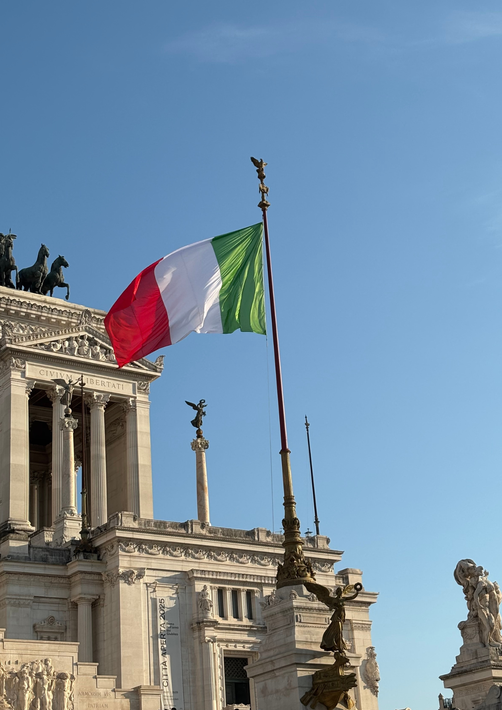
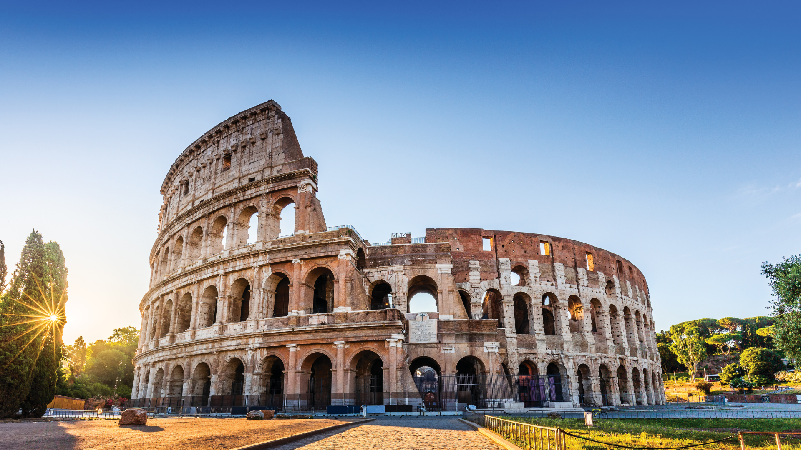
ItáliaVAMOS CARIMBAR A ITÁLIA 🇮🇹
A Itália é um dos destinos mais extraordinários do mundo. Em nenhum outro lugar você encontra tantas camadas de história, arte, gastronomia e beleza natural em tão pouco espaço. De Roma ao Lago di Como, de Nápoles a Capri, cada região carrega personalidade própria e um orgulho imenso da própria cozinha. A Itália não se visita. Ela se vive, devagar, com um espresso no balcão e os olhos abertos para cada detalhe.
A água da torneira na Itália é potável e gratuita. As nasoni, torneirinhas públicas de ferro espalhadas pelas ruas, jorram água fresca o tempo todo. Levem garrafinhas reutilizáveis.
Nós utilizamos a Nomad como conta internacional durante nossas viagens e recomendamos pela praticidade e economia. A conta é em dólar e permite pagamentos em diversas moedas ao redor do mundo, com conversão automática e instantânea no momento da compra.
A transferência de dinheiro pode ser feita via Pix, e o saldo é convertido em poucos segundos diretamente pelo aplicativo, facilitando muito a organização financeira durante a viagem. Não há cobrança de anuidade, nem taxas de abertura ou manutenção.
Abra sua conta gratuitamente com o cupom VAMOSCARIMBAR e ganhe até $20 em cashback.
→ Abrir conta Nomad
Cartões são amplamente aceitos na Itália. Ainda assim, vale ter uma pequena quantia em dinheiro para gastos pontuais, como cafés, feiras e gorjetas.
Sugestão: €100 a €150 em espécie por pessoa.
Para saques, utilize caixas de bancos italianos, como UniCredit e Intesa Sanpaolo. Evite os caixas amarelos da Euronet, que possuem taxas mais altas, e também saques em aeroportos.
Não obrigatórias na Itália. Arredondar o valor já é suficiente.
Em bons jantares: €1–2 por pessoa é considerado generoso.
Em táxis: arredondar o valor é suficiente.
Coperto: taxa de €1–3 por pessoa em restaurantes — normal, não é golpe.
Tax Free: compras acima de €154 numa mesma loja têm devolução do IVA (22%). Peça o formulário na loja.
Sempre pague em € (euro), nunca em reais.
⚠️ Cuidado com batedores de carteira em metrôs, ônibus e atrações lotadas. Bolsa sempre na frente.
⚠️ Golpe das pulseiras: não aceite nada de estranhos na rua. Colocam no pulso e cobram depois.
⚠️ Falsa ajuda nas estações: pessoas que oferecem ajuda com máquinas de bilhete costumam cobrar por isso.
⚠️ Recuse ofertas de estranhos — passeios improvisados, "ingresso mais barato" e guias não credenciados.
Temperatura: 32°C de dia / 22°C à noite. Picos de 37-38°C entre 12h e 16h. Calor seco.
Sol: nasce às 6h10 e se põe às 20h30. Aproveitem a luz dourada do final da tarde para passeios e fotos.
Chuva: improvável, mas trovoadas rápidas podem aparecer no final da tarde.
Saiam cedo para atrações ao ar livre. Entre 12h e 16h, museus e tratorias são seus melhores amigos. A cidade fica ótima de novo a partir das 17h. Proteja-se com FPS 50+, chapéu e bastante água. As nasoni (torneiras públicas espalhadas pela cidade) têm água potável de graça.
Em Roma, joelhos e ombros devem estar cobertos para entrar em igrejas — incluindo a Basílica de São Pedro. O lenço/pashmina resolve: coloque na mochila e use quando precisar. Quem está de shorts curto pode pegar um tecido emprestado na entrada de São Pedro gratuitamente.
Os romanos são expressivos e calorosos com quem tenta o idioma — mesmo que seja "buongiorno + um sorriso". Começar com buongiorno antes de qualquer pedido é essencial: entrar em uma loja ou chamar o garçom sem cumprimentar é considerado rude. O inglês é bem compreendido em pontos turísticos, mas nas trattorias de bairro o menu pode ser só em italiano. Usem o Google Translate com a câmera: funciona offline se baixarem o pacote de italiano antes de embarcar.
Precisam ser compradas com antecedência pois têm risco de esgotar. Reserve o quanto antes.
Esses podem ser comprados na hora, mas recomendamos comprar antes online para evitar filas nas bilheterias.
Tudo que você precisa saber para usar este roteiro com confiança e autonomia — do primeiro ao último dia.
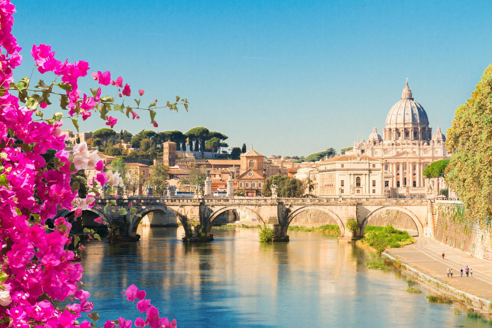

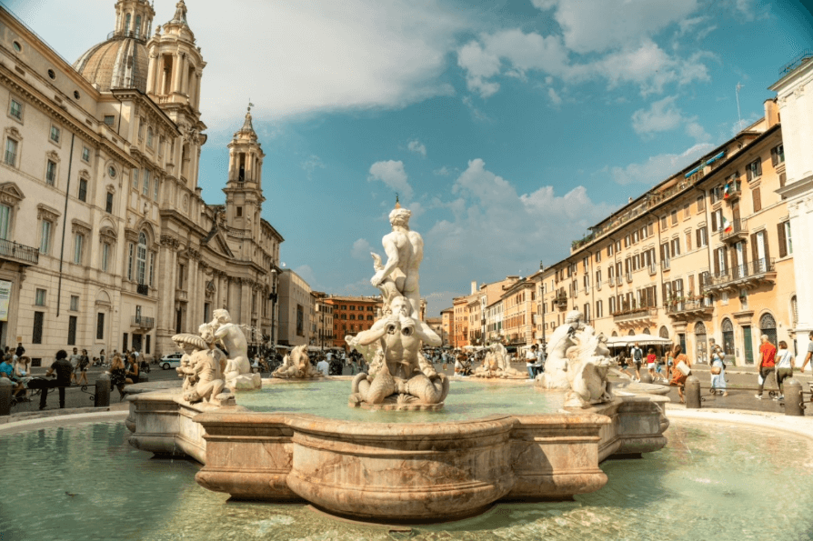
Roma não é uma cidade — é uma sobreposição de 28 séculos de história que caminham juntos sem pedir licença. A capital da Itália é ao mesmo tempo a maior cidade arqueológica do mundo e um organismo urbano vivo e barulhento. Aqui Júlio César foi assassinado, Michelangelo pintou a Sistina, e hoje um barista serve espresso na esquina sem se impressionar com o Coliseu a dois quarteirões. É exatamente essa indiferença cotidiana com a grandiosidade que faz Roma ser única no mundo.
A cozinha romana é honesta, gordurosa e absolutamente deliciosa — baseada em ingredientes simples e técnicas de séculos.
• A conta não vem automaticamente — peça: "Il conto, per favore"
• Coperto (€1–2/pessoa) na mesa é normal — verifique o cardápio
• Água: peça "naturale" (sem gás) ou "frizzante" (com gás)
• Cappuccino após as 11h? Os italianos vão te julgar. Espresso é a ordem.
• Evite: restaurantes com fotos na entrada, promotores na porta e menus só em inglês perto de atrações
Vocês chegam em Fiumicino (FCO) às 10h15 do dia 04/08. O aeroporto fica a 30 km do centro.
Podem perguntar quantos dias vão ficar e pedir o nome e a reserva do hotel. Fiquem tranquilas, é procedimento normal. Tenham o comprovante de hospedagem à mão.
Sigam as placas de sinalização e busquem a área de Taxi ou o Leonardo Express. Não aceitem ofertas de transfer de estranhos — cobranças abusivas.
Como chegar ao hotel
+ Uber/Táxi Termini → Hotel ≈ €10–12 · Total ≈ €28–30 para 2
Com mala grande e chegando de longa viagem, o táxi branco com preço fixo é o mais cômodo. Evitem qualquer pessoa oferecendo transfer informal na saída do aeroporto.
Check-in: a partir das 14h · Check-out: 07/08 até 11h
O bairro Monti é a base perfeita — central, charmoso. A Fontana di Trevi fica a 10 min a pé, o Coliseu a 15 min.
Se chegarem antes das 14h, deixem as malas na recepção e já saiam para explorar — o hotel guarda sem custo. Não percam a tarde esperando o quarto!
Pagamento por aproximação com cartão (Tap & Go) funciona direto nas catracas — a forma mais prática.
Se usarem bilhete físico avulso, guardem o bilhete para validar na saída.
Dia de carimbar Roma Eterna — roteiro a pé pelos pontos mais apaixonantes e charmosos da cidade. Tarde fresca após o almoço, ritmo tranquilo de quem está chegando.
Sei que a emoção é grande, mas após uma noite de voo o corpo pede comida e uma pausa antes de qualquer passeio. Recomendo almoçar perto do hotel com calma e, se precisarem, descansar uma hora quando o quarto estiver pronto. Uma estimativa ideal é começar o roteiro por volta das 15h30.

📍 Via dei Serpenti 178, Monti · 5 min a pé do hotel
Culinária: Panini artesanais + taglieri · custo benefício imbatível
💰 €8–14 ≈ R$50–87 · rápido ou relaxado
✅ Sem reserva · aberto todos os dias

📍 Via della Madonna dei Monti 95 · 5 min a pé do hotel
Culinária: Pizza romana fina e crua + pasta · ambiente descontraído
💰 €12–18 ≈ R$74–112
✅ Sem reserva
 Fontana di Trevi
Fontana di Trevi
A maior fonte barroca do mundo foi encomendada pelo Papa Clemente XII em 1732 e concluída por Nicola Salvi apenas em 1762 — 30 anos de obsessão esculpida em travertino. Netuno domina o centro, flanqueado por cavalos marinhos que representam os dois estados do mar: calmo e agitado. A fonte marca o ponto final do Aqueduto Virgo, construído por Agripa em 19 a.C. para abastecer as termas de Roma. A tradição da moeda foi popularizada pelo filme Três Moedas na Fonte (1954) — hoje a Trevi arrecada mais de €1 milhão por ano em moedas, doados à Caritas romana.
€2 por pessoa ≈ R$12 · acesso diurno com limite de visitantes
⚠️ À noite (após 21h) o acesso é gratuito — considerem voltar.
✦ Comprar ingresso Fontana di Trevi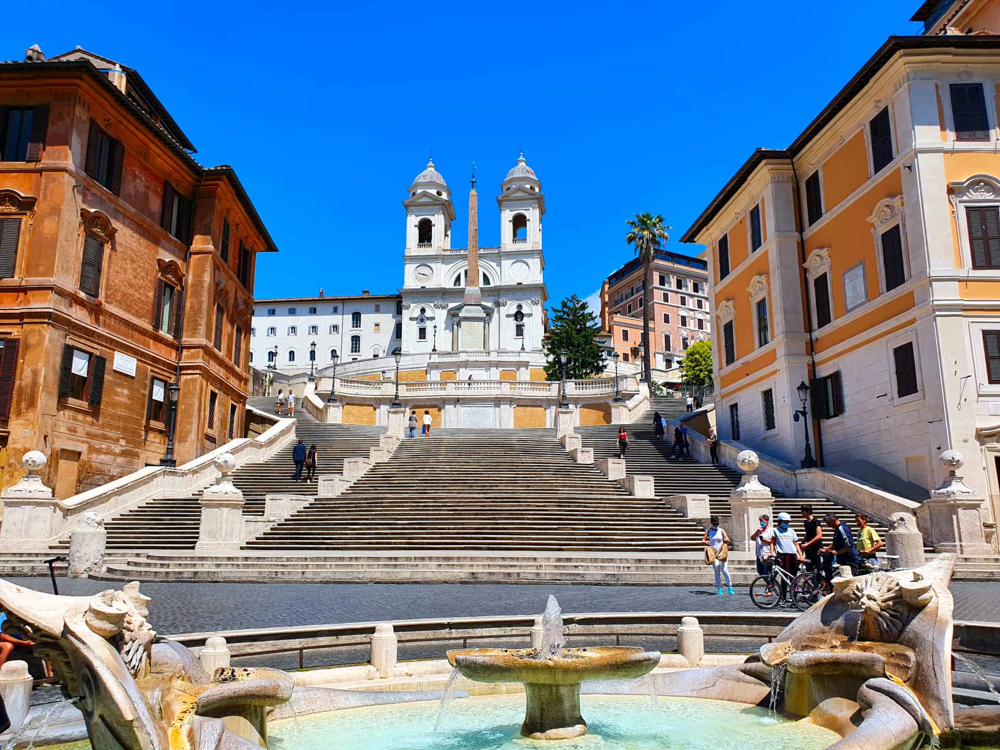
Piazza di SpagnaOs 135 degraus da Scalinata di Trinità dei Monti foram construídos entre 1723 e 1725 com financiamento do embaixador francês — motivo pelo qual a igreja no alto, de arquitetura francesa, destoa do barroco romano ao redor. A Fontana della Barcaccia aos pés foi esculpida por Pietro Bernini (pai do mais famoso Gian Lorenzo) em 1627, representando um barco meio afundado inundado pela cheia do Tibre de 1598. Keats morreu no apartamento à direita da escadaria em 1821 — hoje é museu. A Via Condotti, que desce da piazza, concentra Gucci, Bulgari, Valentino e Hermès num único quarteirão: o endereço mais caro de Roma.
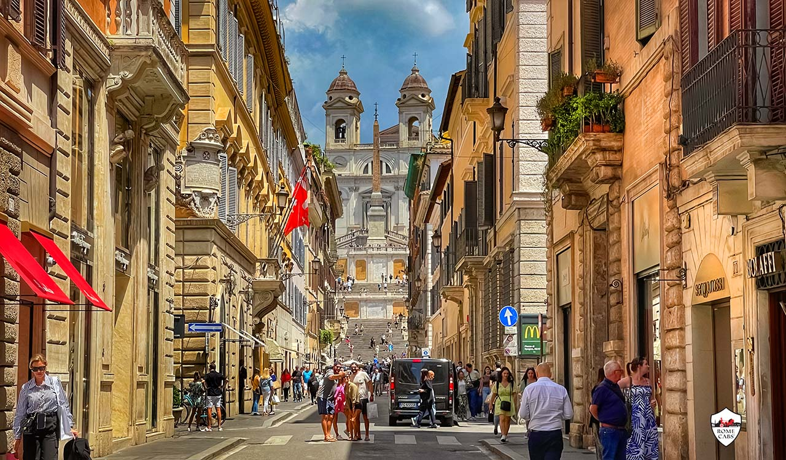
Via Condotti RomaA Via Condotti desce da Piazza di Spagna em linha reta com o Caffè Greco de 1760 — o café histórico mais antigo de Roma — de um lado, e Gucci, Bulgari, Valentino, Hermès e Cartier do outro. Não é necessário comprar nada: as vitrines são design puro e a rua é um set de cinema permanente. O Caffè Greco vale um espresso no balcão só pelo ambiente — Goethe, Casanova e Byron sentaram aqui.
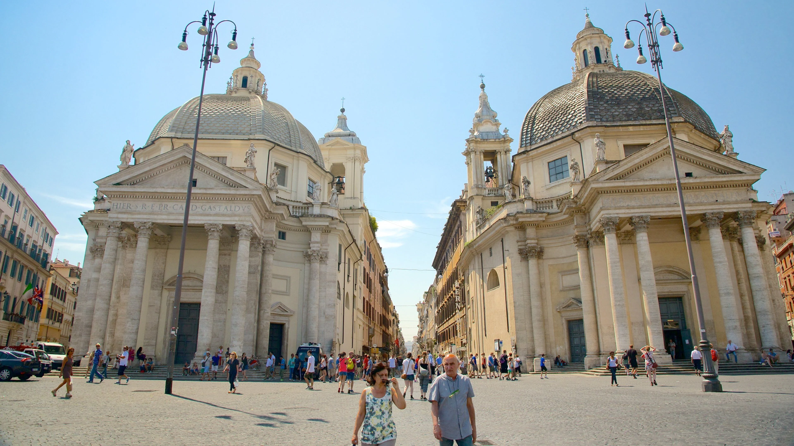
Via del Corso RomaA Via del Corso é a coluna vertebral do centro histórico — 1,5 km retos conectando Piazza Venezia à Piazza del Popolo. É onde os romanos fazem a passeggiata: o ritual do passeio vespertino, ver e ser visto, gelato na mão, entrar numa loja. Caminha-se só um trecho — do cruzamento com a Via Condotti até a Piazza Colonna, onde a Coluna de Marco Aurélio marca dois mil anos de Roma.

📍 Via degli Uffici del Vicario 40 · 3 min da Via del Corso
Culinária: Gelateria artesanal clássica desde 1900 · uma das mais tradicionais de Roma
💰 €3–5 ≈ R$19–31 · cone ou copinho
✅ Sem reserva
 Pantheon
Pantheon
O Pantheon é o maior mistério da arquitetura romana: construído em 125 d.C. por Adriano sobre os alicerces de um templo anterior de Agripa (cujo nome permanece na fachada por humildade imperial), é o edifício de cúpula não reforçada mais largo do mundo — 43,3 metros de diâmetro, exatamente igual à altura do teto ao piso. Por 19 séculos ninguém conseguiu reproduzir a receita do concreto romano. O óculo de 9 metros no teto é a única entrada de luz — e de chuva, que escoa por 22 drenos dissimulados no piso levemente inclinado. Rafael escolheu ser enterrado aqui em 1520. Também repousam aqui Vittorio Emanuele II e Umberto I, primeiros reis da Itália unificada.
€5 por pessoa ≈ R$31 · Compra na bilheteria ou online
✦ Comprar ingresso oficial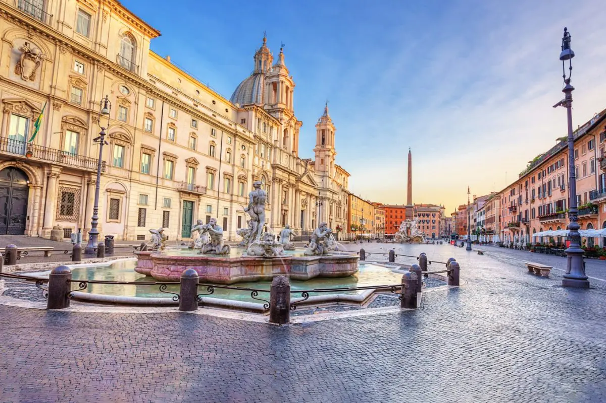
Piazza NavonaA Piazza Navona é construída exatamente sobre o Circo Agonalis do imperador Domiciano, do século I d.C. — as fundações do estádio de 30.000 lugares ainda estruturam os edifícios ao redor. A Fontana dei Quattro Fiumi (1651) é a obra-prima de Bernini: os quatro gigantes de mármore representam os maiores rios dos quatro continentes conhecidos — Nilo (véu no rosto pois sua nascente era desconhecida), Ganges (remo para indicar navegabilidade), Danúbio e Rio da Prata (moedas, pela riqueza americana). A estátua do Nilo tapa os olhos para não ver a fachada da Igreja de Sant'Agnese em Agone, obra do rival Borromini — rivalidade inventada pela lenda mas adorada pelos romanos. Em agosto a praça é o palco mais animado do centro histórico.
€7/pessoa ≈ R$43 · o acesso ao terraço é pago · a parte externa e museus do Vittoriano são gratuitos
✦ Comprar em coopculture.it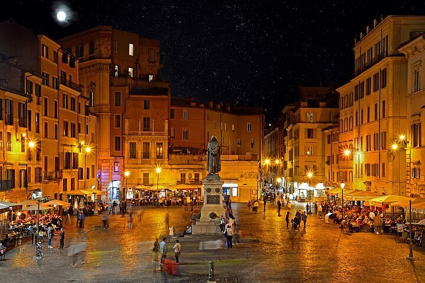
Campo de FioriDe manhã é mercado de flores e hortifruti. À noite é a praça mais animada do centro histórico de Roma — bares abertos, jovens com spritz na mão, músicos tocando nas esquinas. A estátua sombria de Giordano Bruno no centro lembra que aqui aconteciam as execuções da Inquisição — a ironia histórica mais deliciosa de Roma: a praça do terror medieval virou epicentro da festa noturna. De Navona são apenas 5 min a pé e encaixa perfeitamente no ritmo do primeiro dia.
A região entre a Piazza Navona e o Campo de' Fiori é o coração da noite no centro histórico. As fontes da Navona iluminadas reúnem músicos e artistas de rua — a mesma praça que de dia fica tomada de turistas, à noite revela o lado romano de verdade. Campo de' Fiori, a 5 min a pé, tem bares lado a lado com mesas na calçada. Circulem pelas duas praças antes ou depois de jantar.

📍 3 min a pé da Piazza Navona
Culinária: Romana tradicional · ambiente acolhedor
💰 €20–30 por pessoa ≈ R$124–186
✅ Sem reserva

📍 5 min a pé da Piazza Navona
Culinária: Italiana clássica · ambiente refinado
💰 €35–50 por pessoa ≈ R$217–310
⚠️ Reserva recomendada
Do jantar na Piazza Navona, o hotel fica a 15 min a pé — uma caminhada noturna pelo centro histórico que é um programa em si. Passam pela Via del Governo Vecchio, pelo Campo de' Fiori (ainda animado) e sobem pelo Bairro Monti. Uber ou táxi se estiverem cansadas: ≈ €8–10, 5 min.
Roma Antiga em foco — Coliseu, Fórum e Monte Palatino de manhã cedo. Tarde no Vittoriano com a melhor vista gratuita da cidade e passeggiata pela Piazza Venezia.

📍 Via del Boschetto 132, Monti · 5 min a pé do hotel · no caminho pro Coliseu
Culinária: Bar de café romano tradicional · croissants, cappuccino artesanal, atmosfera de bairro
💰 €4–7 ≈ R$25–43 · no balcão como os romanos
✅ Sem reserva · abre 7h

📍 Via dei Serpenti 165, Monti · 3 min a pé do hotel · na mesma rua do hotel
Culinária: Bar histórico desde 1967 · ponto de encontro dos moradores do Monti
💰 €4–8 ≈ R$25–50 · ótimo custo-benefício
✅ Sem reserva · abre 6h
 Via Nicola Salvi Colosseo
Via Nicola Salvi Colosseo
Antes de entrar no Coliseu, passem pela Via Nicola Salvi — a rua que sobe pelo Colle Oppio com uma perspectiva direta e elevada da fachada do anfiteatro. De manhã cedo, com a luz rasante do sol e sem a multidão da tarde, essa é a foto do Coliseu que a maioria dos turistas nunca tira. Ângulo lateral, luz perfeita, quase ninguém na cena.
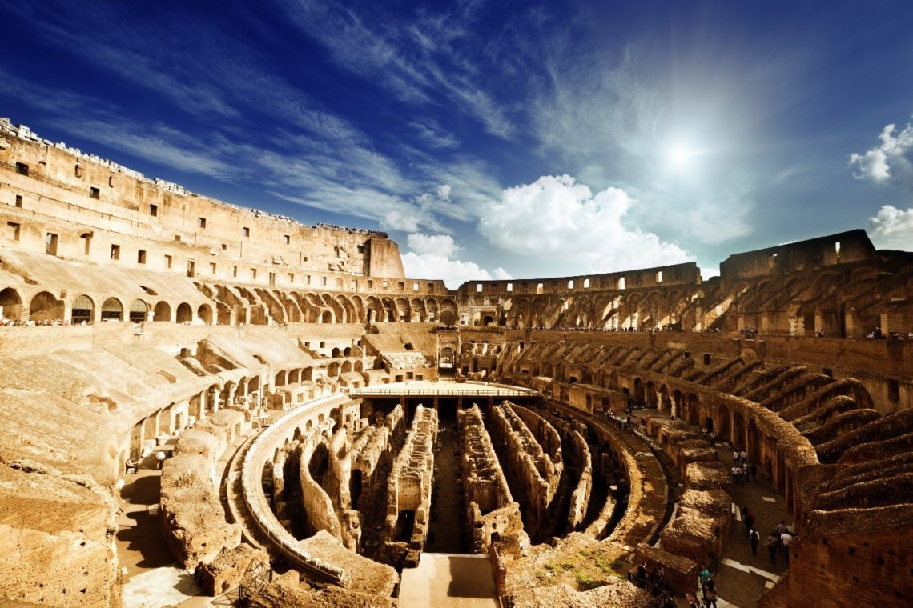
Colosseo interior RomaConstruído entre 72 e 80 d.C. pelo imperador Vespasiano e inaugurado por Tito com 100 dias de jogos, o Coliseu comportava até 80 mil espectadores e tinha um sistema de tendas retráteis (o Velarium) para proteger do sol — uma engenharia que ainda impressiona arquitetos hoje. As 80 entradas numeradas (vomitoria) permitiam encher e esvaziar o anfiteatro em minutos. O nome original Anfiteatro Flávio só virou "Coliseu" na Idade Média, por causa de uma estátua colossal de Nero que ficava ao lado.
€16 por pessoa ≈ R$99 · cobre os 3 sítios em sequência: Coliseu + Fórum Romano + Monte Palatino
🎧 Audioguia em português disponível no local (~€6) — recomendado especialmente para o Fórum.
✦ Comprar em coopculture.it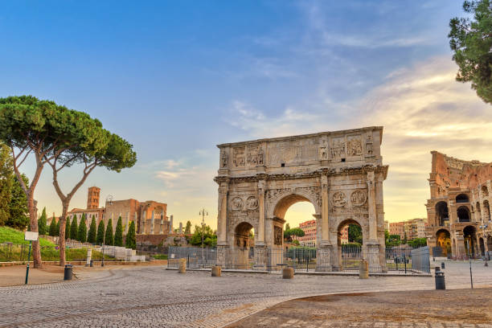
Arco Costantino RomaErguido em 315 d.C. para celebrar a vitória de Constantino sobre Maxêncio na Batalha da Ponte Mílvia, é o maior arco de triunfo da Roma Antiga e o mais bem conservado. Fica entre o Coliseu e o Palatino — literalmente no caminho — e é gratuito. Os relevos que decoram o arco foram "emprestados" de monumentos anteriores de Trajano, Adriano e Marco Aurélio: os romanos não tinham pejo em reciclar arte imperial.
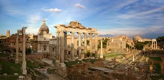
Foro Romano RomaO Fórum Romano foi por séculos o centro político, comercial e religioso do mundo. Aqui Júlio César foi assassinado (no Templo de Vesta), aqui os cônsules discursavam, aqui passavam os triunfos militares. O Monte Palatino acima — o mais antigo dos sete morros de Roma — é onde a tradição diz que Rômulo fundou a cidade em 753 a.C. e onde depois os imperadores construíram seus palácios com vista para tudo.
Até ~13h30/14h vocês terão finalizado o Coliseu, Fórum e Palatino. O calor de agosto pede uma pausa — almocem com calma e descansem entre 14h e 16h antes de seguir para o Vittoriano.

📍 Via Magnanapoli 9 · 8 min a pé do Fórum Romano
Culinária: Italiana de rua autêntica · pizza al taglio, lasanha, gnocchi ao pesto
💰 €8–14 ≈ R$50–87 por pessoa · excelente custo-benefício
✅ Sem reserva · aberto todos os dias
Em agosto o sol de Roma entre 13h e 16h é sério. Almocem com calma, tomem um café e descansem um pouco antes de seguir para o Vittoriano às 16h.
 Piazza Venezia Roma
Piazza Venezia Roma
Piazza Venezia é o ponto onde convergem todas as grandes avenidas do centro de Roma — a Via del Corso, a Via dei Fori Imperiali, a Via del Teatro di Marcello. É o centro geográfico da cidade e o palco do famoso meme do guarda de trânsito que rege o caos com gestos operísticos. O Palazzo Venezia, do lado esquerdo, foi o balcão de onde Mussolini discursava para as multidões durante o fascismo. O Altare della Patria domina tudo ao fundo — é impossível não parar e fotografar.
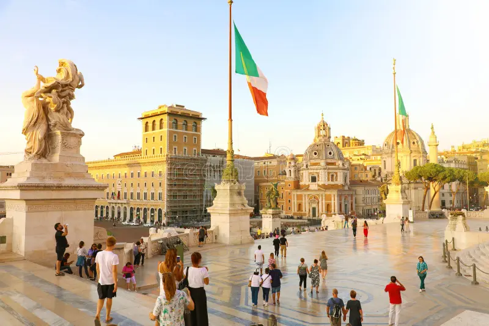
Vittoriano Roma pôr do solO Altare della Patria — batizado pelos romanos de "máquina de escrever" pela forma — abriga no topo a Terrazza delle Quadrighe, um dos melhores pontos de vista de Roma: a cidade inteira se abre diante de vocês, do Fórum Romano ao Coliseu, dos telhados de Trastevere à cúpula do Vaticano. Em agosto o pôr do sol é por volta das 20h — chegando às 19h a luz dourada transforma o panorama.
€7/pessoa ≈ R$43 · acesso ao terraço panorâmico · o exterior e os museus do Vittoriano são gratuitos
✦ Comprar em coopculture.itDepois do Vittoriano, a noite é de passeio livre. A ideia é caminhar no rumo do hotel — andando devagar, se perdendo pelas ruazinhas de Monti, entrando nos bares que chamarem atenção. Passem pelo Coliseu iluminado: à noite ele tem uma presença completamente diferente do dia.

📍 Via delle Terme di Tito 72 · 2 min do Coliseu · no topo do Colle Oppio
Estilo: Cocktail bar com terraço panorâmico direto para o Coliseu · aperitivo + buffet
💰 Das 17h às 22h: €10 ≈ R$62 · drink + buffet all-you-can-eat. Cocktails avulsos ~€6–8
✅ Sem reserva · abre 11h até 2h
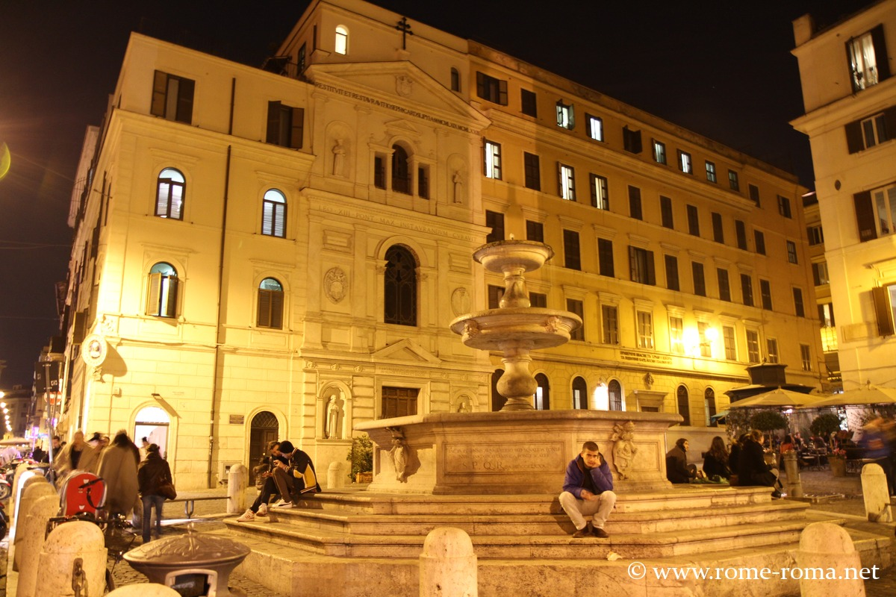
Piazza Madonna dei Monti RomaA Piazza della Madonna dei Monti é o ponto de encontro dos moradores do bairro. Noite após noite, jovens romanos se reúnem nos degraus da fonte central com garrafinhas de vinho compradas nas cantinas ao redor — não há um bar específico, é a praça inteira que vira o programa. Em agosto, quando o Monti se transforma no bairro mais animado do centro histórico, essa praça resume tudo que torna Roma especial: descontração, beleza e a sensação de ter chegado no lugar certo.

📍 Via della Madonna dei Monti 18/19 · próximo ao hotel e à piazza
O bar inteiro é construído em gelo — paredes, balcão, até os copos. Temperatura interna: −5°C. Fornecem uma capa térmica na entrada.
💰 €15 ≈ R$93 · entrada inclui 1 drink em copo de gelo
⚠️ Reserva recomendada em agosto · abre 17h
Da Piazza della Madonna dei Monti até o Hotel Trevi Palace são menos de 5 min a pé. O dia foi intenso — o Coliseu, o Fórum, o Palatino, o Vittoriano. Durmam bem para o Vaticano amanhã.
Dia do Vaticano — a maior concentração de arte do mundo num único dia. Manhã nos Museus, tarde na Basílica e encerramento no Castel Sant'Angelo com o aperitivo no Campo de' Fiori.

📍 Via dei Serpenti 23, Monti · 3 min a pé do hotel · no caminho pro metrô
Culinária: Torrefazione histórica · café de torra própria desde 1882 · pastéis, maritozzo, tramezzini
💰 €3–7 ≈ R$19–43 · no balcão como os romanos
✅ Sem reserva · abre 6h
São 4 km do Hotel Trevi Palace até o Vaticano — aqui vai a comparação dos 3 melhores jeitos:
~25 min total
~35–45 min
~15–20 min
💡 Nossa sugestão: metrô — barato, direto, chega descansada. Baldeação em Termini na mesma plataforma. Saída Ottaviano, 5 min a pé até a entrada dos Museus.
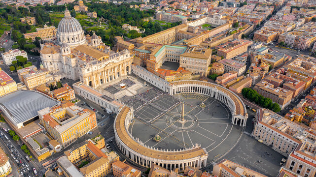
Piazza San Pietro VaticanoAntes de entrar nos Museus, a Piazza San Pietro merece uma pausa. Projetada por Bernini entre 1656 e 1667, é uma das maiores obras da arquitetura barroca: dois colunados semicirculares com 284 colunas e 88 pilastras abraçam a praça como "braços da Igreja" — metáfora do próprio Bernini. O obelisco egípcio do centro tem 2.000 anos e foi trazido por Calígula. Com cedo, a luz rasante na fachada da Basílica é a mais bonita do dia.
 Basilica San Pietro Roma interior
Basilica San Pietro Roma interior
A Basílica de São Pedro foi construída sobre o local onde o apóstolo Pedro foi sepultado após seu martírio em 64 d.C. A versão atual levou 120 anos (1506–1626) e teve Bramante, Rafael, Sangallo e Michelangelo como arquitetos — cada um deixando sua marca. O dossel de bronze de Bernini sobre o altar principal tem 29 metros de altura. A Pietà de Michelangelo, esculpida quando ele tinha 24 anos, fica na primeira capela à direita. A cúpula de 137 metros criada por Michelangelo ainda é a mais alta do mundo.
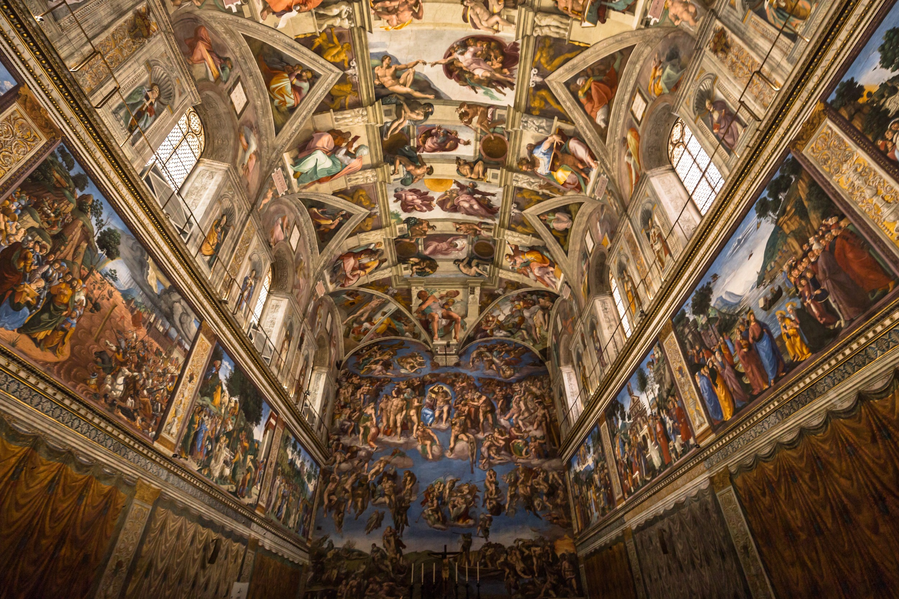
Musei Vaticani Cappella SistinaOs Museus do Vaticano são, na prática, vários museus dentro de um palácio apostólico: a Pinacoteca, as Galerias de Mapas, o Apartamento Borgia, os Aposentos de Rafael — e a Capela Sistina como ponto culminante. Michelangelo levou 4 anos (1508–1512) pintando o teto deitado em andaimes, criando mais de 300 figuras. A cena mais famosa — a Criação de Adão — tem o dedo de Deus a centímetros do dedo de Adão. Ao fundo, o Juízo Final foi pintado 25 anos depois, quando Michelangelo tinha 66 anos.
€20 por pessoa ≈ R$124 · inclui Museus + Capela Sistina
⚠️ Em agosto as entradas esgotam semanas antes — comprem logo após receber o roteiro.
✦ Comprar em museivaticani.va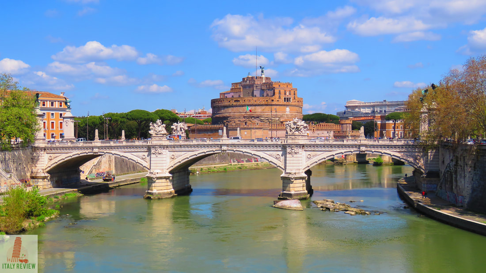
Ponte Vittorio Emanuele RomaA Ponte Vittorio Emanuele II é a transição natural entre o Vaticano e o restante do centro histórico. Cruzar o Tibre aqui oferece uma vista simultânea do Castel Sant'Angelo à esquerda e do Vaticano ao fundo — dois mil anos de Roma num único enquadramento. É o início da caminhada até a Villa Borghese, que começa com o ônibus ou Uber daqui.
 Castel Sant Angelo Roma
Castel Sant Angelo Roma
Construído em 135 d.C. como mausoléu para o imperador Adriano e sua família, o Castel Sant'Angelo se tornou ao longo dos séculos fortaleza, prisão e refúgio dos papas em períodos de crise — conectado ao Vaticano por um passagem secreta elevada chamada Passetto di Borgo. O anjo de bronze no topo surgiu de uma visão do Papa Gregório I em 590 d.C., durante uma prece para o fim de uma epidemia de peste. O terraço oferece uma das melhores vistas do Tibre e do Vaticano.
€15 por pessoa ≈ R$93 · compre na bilheteria ou online
✦ Ver em beniculturali.it
📍 Via di Porta Castello 11/12 · 5 min a pé do Castel Sant'Angelo
Culinária: Trattoria romana tradicional · cucina caseira · pizzas de longa fermentação
💰 €15–28 ≈ R$93–174 por pessoa
⚠️ Reserva recomendada · aberto 10h–23h30
↗ Mais informações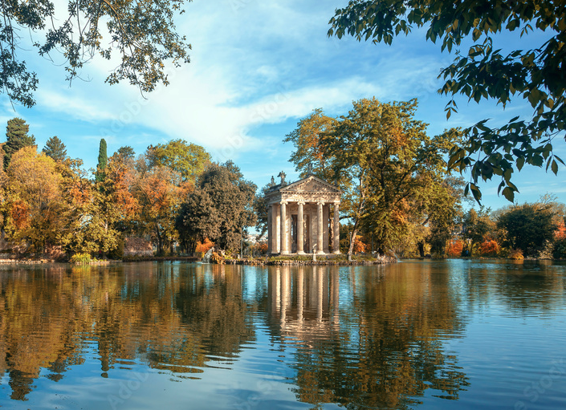
Villa Borghese Temple of Aesculapius lakeCom 80 hectares no coração de Roma, a Villa Borghese é o parque onde os romanos respiram — pinheiros mediterrâneos, lagos, estátuas e fontes. O ponto mais fotogênico é o Templo de Esculápio no meio do lago artificial: um templo neoclássico sobre uma ilha, refletindo na água parada. Barcos para alugar ao redor do lago (~€5 por 20 min), relógio d'Água de 1873 que funciona até hoje, bicicletas e quadriciclos para alugar na entrada principal.
 Galleria Borghese Roma interior Bernini
Galleria Borghese Roma interior Bernini
A Galleria Borghese é um dos melhores museus da Europa — instalada no palácio de caça da família Borghese, com um acervo que faz parar. Esculturas de Bernini em mármore que parecem respirar: o Apolo e Dafne, onde Dafne se transforma em árvore na sua fuga; o Rapto de Proserpina, com os dedos de Plutão afundando na carne de pedra. Pinturas de Caravaggio, Rafael e Canova. A visita é limitada a 2h por turno — e vale cada minuto.
€15/pessoa ≈ R$93 + taxa de reserva · visita de 2h por turno · hora marcada obrigatória
✦ Comprar em galleriaborghese.it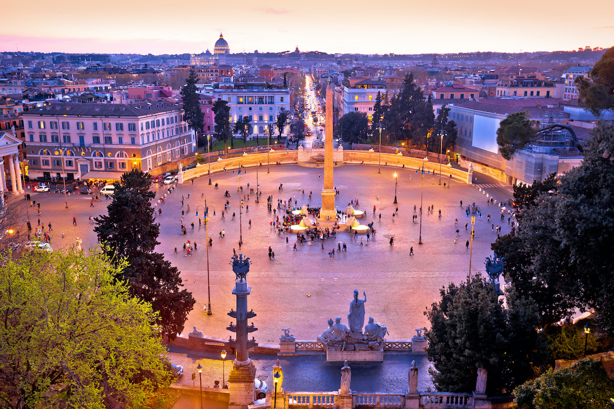
Terrazza del Pincio sunset RomaO mirante na borda oeste da Villa Borghese, acima da Piazza del Popolo, oferece uma das vistas mais amplas de Roma — do Vaticano à cúpula do Pantheon. Em agosto o pôr do sol ocorre por volta das 20h15. Cheguem às 19h30 para garantir lugar na grade da beira. Ao lado, uma lojinha vende cerveja gelada e snacks — sentem no jardim murado e esperem o sol desaparecer atrás da linha dos telhados.

📍 Via Vittorio Veneto 167 · 10 min a pé da Villa Borghese · no coração da Dolce Vita
Culinária: Pizzaria de luxo do chef Flavio Briatore · pizza ultra fina sem fermento · DJ set ao vivo todas as noites
💰 €25–45 ≈ R$155–279 por pessoa · experiência premium
🔴 Reserva essencial
↗ Mais informaçõesDa Crazy Pizza até o hotel são 20 min a pé — descem pela Via Veneto, passam pela Via del Tritone e chegam à Fontana di Trevi (que à noite está quase vazia e iluminada — gratuita). Uma oportunidade única de vê-la sem multidão. De lá mais 10 min a pé até o hotel no Monti. Se estiverem muito cansadas, Uber/FREE NOW do ponto: ≈ €10, 10 min.
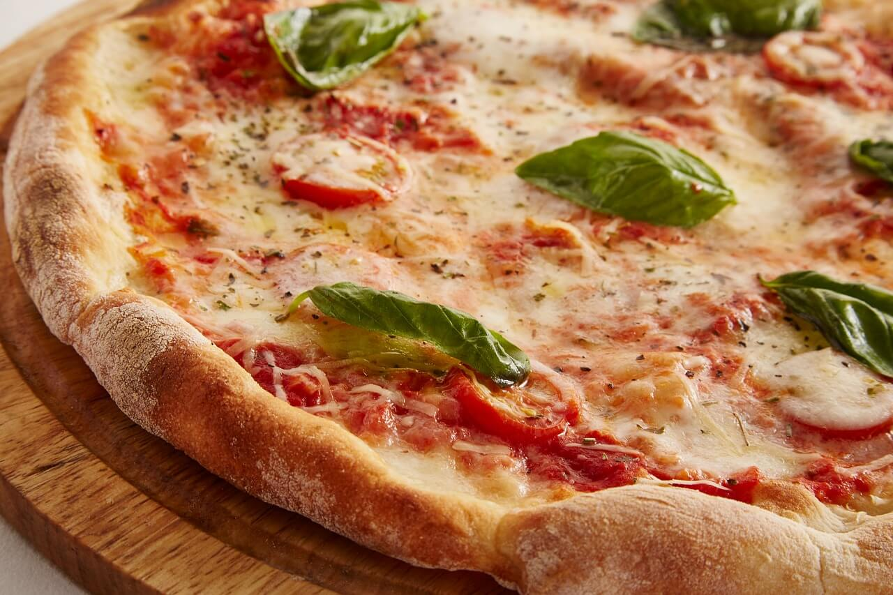
PIZZA NAPOLITANA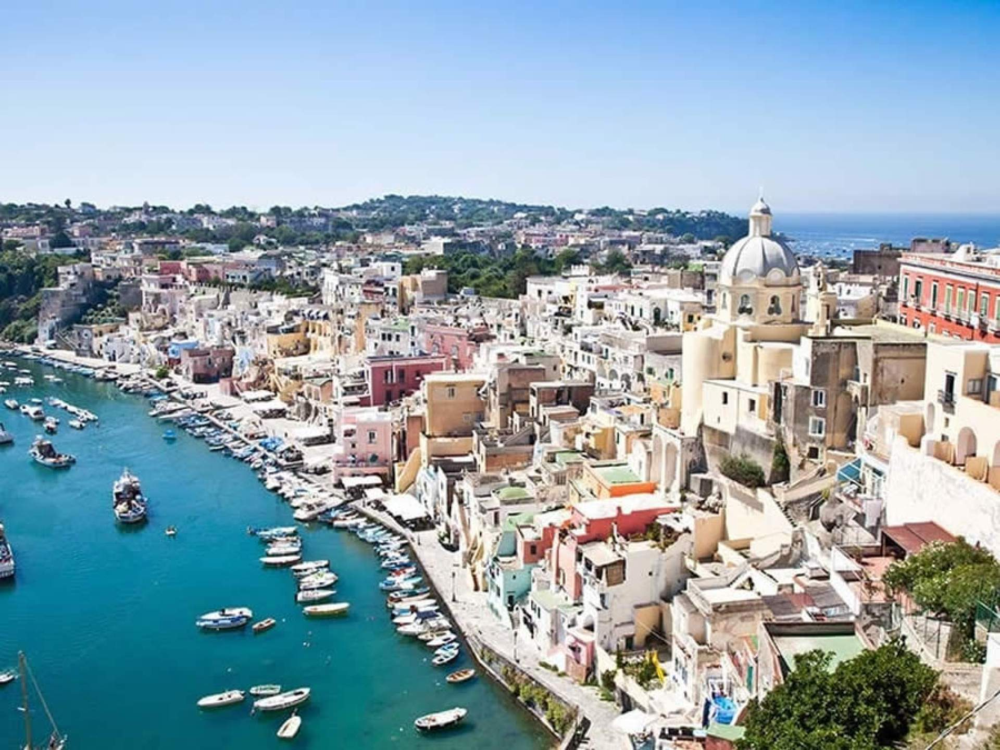
VESÚVIO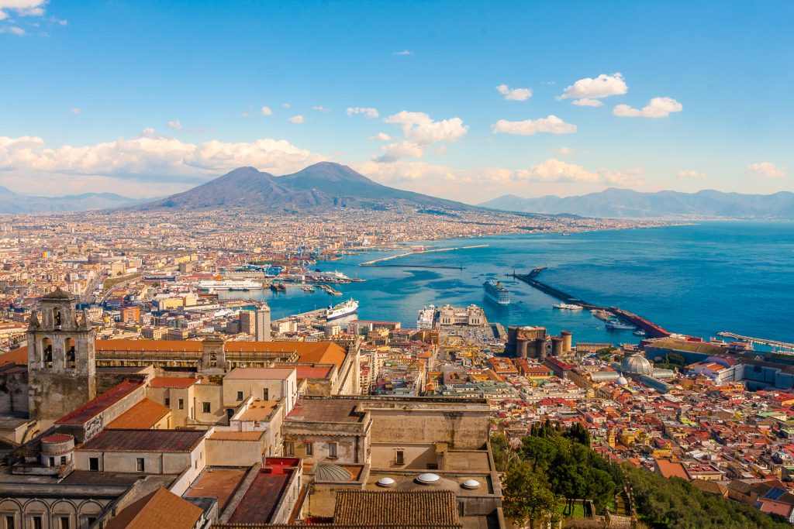
TEATRO E CULTURANápoles é a cidade mais intensa, viva e contraditória da Itália — suja e majestosa, caótica e apaixonante. Fundada pelos gregos em 470 a.C. como Neápolis ("cidade nova"), foi capital do Reino das Duas Sicílias e hoje é a terceira maior cidade do país. O centro histórico é Patrimônio Mundial da UNESCO. O Vesúvio, que destruiu Pompeia em 79 d.C., ainda está ativo e define a paisagem de toda a região. Passam pelo seu coração as histórias mais extraordinárias da civilização ocidental.
A pizza foi inventada aqui. Não é exagero — é fato histórico registrado pela UNESCO como Patrimônio Cultural Imaterial da Humanidade.
Dia de travessia — saída cedo de Roma para Nápoles. Manhã no centro histórico napolitano, almoço obrigatório na Da Michele e tarde na orla antes do trem para Sant'Agnello.
Pode ser no caminho para a estação ou na própria Termini — uma pizza bianca com mortadela ou um cornetto embalado. O trem sai às 9h e não há tempo para sentar em bar. A padaria Forno di Campo de' Fiori (Via del Governo Vecchio) abre às 7h30.
Organizem as malas na noite anterior. Checkout às 7h/8h — saiam direto para a estação com todas as malas. A próxima hospedagem é em Sorrento.
Da Via Mazzarino 2 até a Stazione Termini: 🚇 Metrô linha A — Estação Repubblica (10 min a pé) → Termini (2 min, €1,50) · ou 🚕 Táxi direto ≈ €8, 5 min. Saiam às 8h15 para chegar com margem.
Saída: 9h00 · Chegada: 10h10 — direto, sem parada, o mais confortável
O Frecciarossa tem Wi-Fi, tomadas e bagageiro — perfeito com mala grande
Igualmente confortável · compare preços na hora da compra
Agosto é alta temporada — os Frecciarossa lotam. Comprem pelo site oficial trenitalia.com com pelo menos 1–2 semanas de antecedência. A tarifa economy é a mais barata mas não reembolsável — confirme o horário antes de comprar.
Confirme o Binario (plataforma) no painel de chegadas — muda até o último momento. Os trens de Alta Velocidade saem sempre dos binários 1–16, ala central. Cheguem à plataforma com 15 min de antecedência.
Ao sair do trem, primeiro passo: deixar as malas antes de explorar a cidade.
Da saída do metrô Duomo, a Spaccanapoli fica a 5 min a pé descendo pela Via del Duomo.
 Spaccanapoli
Spaccanapoli
Spaccanapoli — literalmente "rasga Nápoles" — é o eixo da Via dei Tribunali e Via San Biagio dei Librai que corta o centro histórico em linha reta desde a época grega, há mais de 2500 anos. É o caos e a beleza napolitana em forma pura: barulho de motos, cheiro de pizza e fritto, lojas de presépios artesanais centenários, igrejas barrocas em cada esquina e napolitanos que vivem nos mesmos quarteirões há gerações. Toda a área é Patrimônio Mundial da UNESCO. Caminhem devagar, olhem para cima — os palazzi têm séculos empilhados nas fachadas.
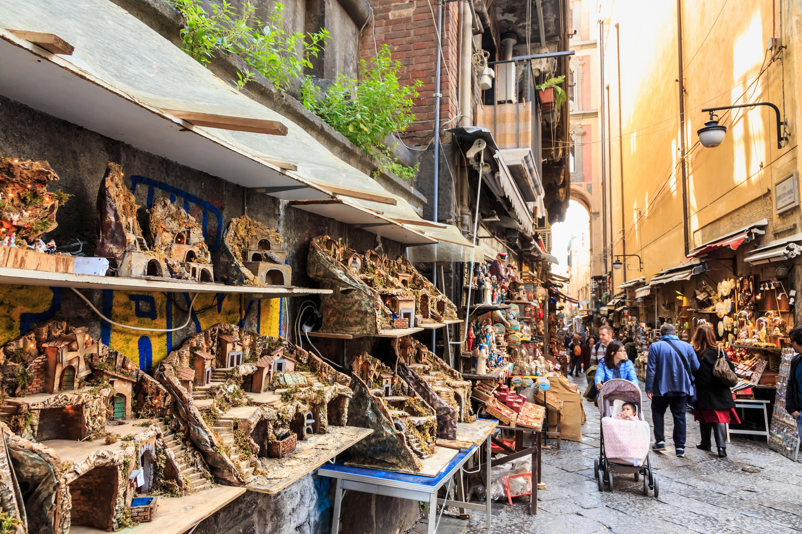
Via San Gregorio ArmenoA rua mais famosa de Nápoles para o artesanato de presépio — uma tradição que remonta ao século XVIII. As bancas alinham-se dos dois lados com figuras de terracota pintadas à mão: pastores, animais, anjos — e, tipicamente napolitano, figuras de celebridades e políticos do momento inseridas na cena do presépio. Em agosto as lojas estão abertas e os artesãos trabalham na vitrine. É uma das ruas mais fotografadas de Nápoles por razão justa.
 Cristo Velado Sansevero
Cristo Velado Sansevero
A Cappella Sansevero guarda o Cristo Velato de Giuseppe Sanmartino (1753) — Cristo morto coberto por um véu de mármore tão fino que parece tecido real: as dobras, a textura, os traços do rosto sob o pano. Esculpido de um único bloco de mármore por um artista de 29 anos, é considerada por muitos a maior escultura do século XVIII e possivelmente a mais tecnicamente impossível da história. Também abriga os enigmáticos Macchine Anatomiche — dois esqueletos com sistema vascular em arame preservado por processo desconhecido. Nápoles esconde esta joia a dois passos do barulho do centro.
€10 por pessoa ≈ R$62 · Horários: Qua–Mon 9h–19h (fechado terças)
✦ Comprar ingresso online Duomo Napoli
Duomo Napoli
O Duomo di Napoli, dedicado a San Gennaro (o patrono da cidade), data do século XIII mas sobrepõe estruturas paleocristãs do século IV. A Cappella di San Gennaro ao lado guarda a relíquia mais venerada de Nápoles: uma ampola com o sangue coagulado do santo que supostamente se liquefaz três vezes por ano em cerimônias públicas. Se não acontece, os napolitanos interpretam como presságio de calamidade. A cidade inteira para para ver. O interior é austero e imponente — muito diferente do barroco exuberante do resto da cidade.
 L'Antica Pizzeria da Michele Naples
L'Antica Pizzeria da Michele Naples
Desde 1870, a L'Antica Pizzeria da Michele serve dois sabores de pizza e só dois: Margherita e Marinara. Nenhuma outra opção existe. A massa é fina no centro e alta nas bordas, o forno a lenha fica a 485°C, o tempo de cozimento é 90 segundos e o resultado é a pizza mais copiada e jamais igualada do mundo. Ficou ainda mais famosa com o filme Eat Pray Love, com Julia Roberts. A fila é parte da experiência — cheguem cedo.
 Piazza del Plebiscito Napoli
Piazza del Plebiscito Napoli
A maior praça de Nápoles — um semicírculo monumental com a Basílica de San Francesco di Paola ao fundo, inspirada no Pantheon de Roma. À esquerda, o Palazzo Reale dos Bourbon. As estátuas equestres dos reis Carlos III e Fernando I dominam o centro. A praça dá direto para o Lungomare e o Golfo de Nápoles — a brisa do mar chega até aqui e alivia o calor de agosto.
 Castel dell'Ovo Napoli
Castel dell'Ovo Napoli
O Castel dell'Ovo — Castelo do Ovo — é construído numa ilha artificial ligada ao continente por uma ponte e é o mais antigo de Nápoles, com fundações romanas do século I d.C. O nome vem de uma lenda: Virgílio teria escondido um ovo mágico nos alicerces — enquanto o ovo não quebrar, Nápoles não cairá. O castelo é gratuito, a vista do terraço para o golfo, o Vesúvio e a cidade é absolutamente cinematográfica, e o bairro Borgo Marinari aos pés do castelo tem os melhores restaurantes de frutos do mar de Nápoles.
Do terraço do Castel tem uma das vistas mais bonitas do golfo. Ali perto, no Borgo Marinari, duas paradas obrigatórias:
• Desio Gelato (Via Partenope 10) — gelato artesanal com vista para o castelo · imperdível.
• Gino Sorbillo Lievito Madre al Mare (Via Partenope 1) — filial do templo da pizza napolitana, com mesa na beira da água. Para quem ainda tiver fome depois da Da Michele — ou quiser uma segunda rodada.
Da Piazza del Plebiscito / Castel dell'Ovo: metrô Chiaia → Napoli Garibaldi (Linha 1 · ~5 min · Tap & Go) · Retirem as malas no depósito · Saída sugerida:18h–19h/p>
Com AC · lugares reservados · voltado para turistas
⚠️ Compre o bilhete com antecedência em trenitalia.com ou nas bilheterias da estação
Peçam ao condutor ou fiquem atentas ao painel — a estação de Sant'Agnello fica antes de Sorrento e é muito mais próxima do hotel. Da parada até o Unconventional Sorrento Coast são apenas 5 min a pé.
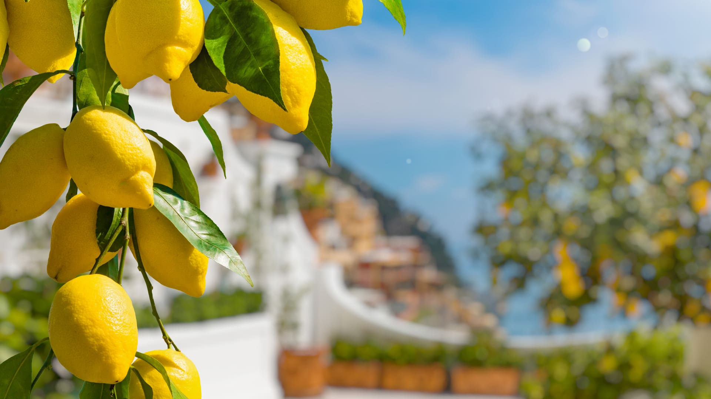
LIMÕES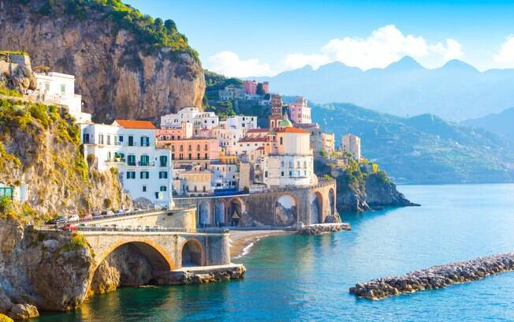
BARCO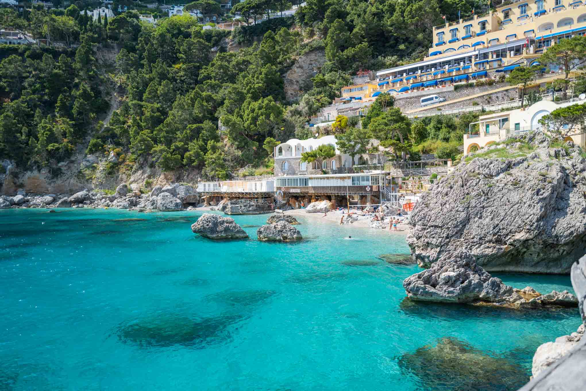
MARSorrento é o melhor ponto de partida para explorar a Costa Amalfitana — uma pequena cidade de limoeiros e terraços sobre o Golfo de Nápoles, com o Vesúvio visível do outro lado. Daqui partem os ferries para Positano, Amalfi e Capri. A Costa Amalfitana é Patrimônio Mundial da UNESCO: 50 km de penhascos cor de terracota, casas coloridas grudadas nas encostas e um mar que muda de azul dependendo da hora do dia.
A culinária da Campânia é a do limone — tudo tem limão, cheira a limão, é feito com limão. O limão de Sorrento tem IGP e é o maior e mais perfumado da Itália.
• Sempre peçam se o peixe é fresco ou congelado — em locais turísticos podem servir congelado pelo preço do fresco.
• O coperto (€2–3/pessoa) é normal na Costa — verifique o cardápio antes.
• Evite restaurantes com fotos na entrada perto dos portos — são armadilhas turísticas. Entre uma rua mais para dentro.
Chegando cansadas e com mala, aqui vão as duas opções do trajeto:
Check-in: a partir das 14h · Check-out: 11h
Hotel moderno em Sant'Agnello, a poucos minutos a pé do centro de Sorrento. Localização estratégica: 5 min a pé da estação de Sant'Agnello, perto da Via San Cesareo e da Marina Piccola, de onde partem os ferries para Capri e Positano.

📍 Via Cappuccini 30, Sant'Agnello · 10 min a pé do hotel
Culinária: Trattoria familiar moderna · frutos do mar frescos · massas artesanais · ambiente acolhedor
💰 €30–40 ≈ R$186–248 por pessoa · nota 4.9 no Google
Após o check-in e um descanso rápido, o Alfred é o jantar perfeito — pequeno, familiar, longe do turismo central. Não saiam sem tomar o primeiro limoncello gelado da viagem.
⚠️ Reserva recomendada · lugares limitados
Café da manhã com calma no hotel. Como é sábado, a Costa Amalfitana costuma ficar bastante cheia — por isso, a melhor estratégia para esse dia é aproveitar Sorrento com mais tranquilidade e curtir um beach club. Centro histórico pela manhã, elevador para o mar e tarde inteira no Bagni Salvatore.
É dia de praia — saiam do hotel já preparadas: roupa de banho, protetor solar FPS 50+, óculos de sol, toalha, água e uma mochila leve. Não precisam voltar pro hotel antes do beach club.
Não é possível comprar a passagem dentro do ônibus. Comprem antes em uma tabaccheria (tabacaria), banca de jornal ou bar próximo. Custo: €1,50/pessoa. Validem na máquina assim que embarcar.
 Piazza Tasso Sorrento
Piazza Tasso Sorrento
A Piazza Tasso é o centro pulsante de Sorrento — nomeada em homenagem ao poeta Torquato Tasso, nascido aqui em 1544. Rodeada por cafés, o palazzo neoclássico da Prefeitura e a vista do golfo ao fundo, é onde o dia começa e onde tudo se encontra. Às 9h de sábado ainda está tranquila — aproveitem um cappuccino antes do movimento dos turistas tomar conta.
 Vallone dei Mulini Sorrento ruins
Vallone dei Mulini Sorrento ruins
Literalmente no meio de Sorrento, escondido atrás da Piazza Tasso, há um vale profundo com ruínas de moinhos medievais do século XVI — engolido pela vegetação e completamente inesperado para quem não sabe. A maioria dos turistas passa pela grade sem perceber o que está olhando. É de graça, é pertinho e é uma das curiosidades mais fotogênicas da cidade.
 Via San Cesareo Sorrento shops
Via San Cesareo Sorrento shops
A rua pedestre do centro histórico de Sorrento — estreita, com arcos medievais, e cheirando a limão o tempo todo. Aqui ficam as melhores lojas de limoncello artesanal, cerâmica de Vietri, confeitarias com a sfogliatella e o babà napolitano, e as lojas de marchetaria (a arte local em madeira trabalhada típica de Sorrento). Ainda de manhã cedo é quase só dos sorrentinos.
 Chiostro San Francesco Sorrento
Chiostro San Francesco Sorrento
O Chiostro di San Francesco tem um pátio interno com colunas de estilo árabe-normando do século XIV — um dos espaços mais silenciosos e belos de Sorrento, geralmente quase vazio. É a antessala perfeita para a Villa Comunale ao lado, e funciona também como espaço de exposições de arte temporárias durante o verão.
 Villa Comunale Sorrento golfo Napoli view
Villa Comunale Sorrento golfo Napoli view
O jardim público de Sorrento fica na borda da falésia, suspenso a 50 metros acima do mar. Daqui a vista abrange o Golfo de Nápoles, o Vesúvio ao fundo e Capri à esquerda — e é de graça. É o último ponto antes de descerem para o mar pelo elevador logo ao lado.
 Sorrento lift elevator cliff sea
Sorrento lift elevator cliff sea
O Sorrento Lift sai de dentro da Villa Comunale e desce pela falésia diretamente até a Marina Piccola em poucos metros — uma das entradas mais bonitas para o mar em toda a Campânia. Do lado de baixo, a 2 min a pé, fica o Bagni Salvatore.
€1,20/pessoa por trajeto · Dica: desçam de escadas (~200 degraus, gratuito) e subam pelo elevador na volta quando estiverem cansadas com as bolsas.
 Bagni Salvatore Sorrento beach club
Bagni Salvatore Sorrento beach club
O Bagni Salvatore é o beach club mais bem localizado de Sorrento — construído em três terraços sobre palafitas com as ruínas da villa do príncipe Agrippa Póstumo (sobrinho do Imperador Augusto) emergindo d'água ao lado. A água em agosto está em 26°C, mais quente que na Costa Amalfitana, pois a Baía de Nápoles é mais rasa.
Subam pelo elevador (€1,20) com o pôr do sol. A Via San Cesareo à noite tem outro ritmo — mais animada, com os moradores circulando. Jantem no centro antes de voltar pro hotel.

📍 Corso Italia 134 · 5 min a pé da Piazza Tasso · no centro histórico
Culinária: Street food gourmet · schiacciata artesanal · sanduíches com ingredientes fatiados na hora · taglieri de frios
💰 €10–20 ≈ R$62–124 por pessoa · excelente custo-benefício
✅ Sem reserva · street food · mesas na calçada
Do centro histórico ao hotel: 12 min a pé pela Via Cappuccini · ou ônibus EAV/SITA sentido Sant'Agnello (€1,50) · ou Uber ~€8.
Passeio de barco completo pela Costa Amalfitana — o dia mais épico da viagem. Todos os pontos que só se acessam pelo mar: Punta Campanella, Li Galli, Praiano, Fiordo di Furore, Grotta dello Smeraldo, Amalfi e Positano. Saída pelo porto de Sorrento de manhã, retorno ao final da tarde.
⏰ Cheguem ao porto com 20–30 min de antecedência do horário do barco.


Passeio compartilhado (grupo pequeno, até 12 pessoas): €60–100/pessoa · dia inteiro saindo de Marina Piccola
⚠️ Em agosto esgota com dias de antecedência. Reserve antes de embarcar para a Itália.
✦ Ver opções no GetYourGuideO barco retorna pela Marina Piccola por volta das 18h. De lá até o hotel:
Dia dedicado a conhecer Amalfi com calma pela manhã e subir para Ravello ao meio-dia — a cidade mais alta e mais silenciosa da Costa. Ferry Sorrento→Amalfi de manhã cedo, passeio pelo centro histórico, ônibus para Ravello com almoço panorâmico e tarde nas villas suspensas. Volta de ônibus com parada em Sant'Agnello.
⏰ Saiam do hotel às 7h15 para pegar o ferry das 8h — 15 min de ônibus ou a pé até a Marina Piccola. Comprem o bilhete na bilheteria do porto ou online em ferryhopper.com.
 Antico Arsenale Amalfi Repubblica
Antico Arsenale Amalfi Repubblica
O Antico Arsenale é o que sobrou dos estaleiros medievais onde a República de Amalfi construía suas galeras no auge do poder marítimo — século XI e XII, quando Amalfi era uma das quatro maiores potências navais do Mediterrâneo. Os arcos de pedra e a estrutura subterrânea à beira-mar são um dos poucos testemunhos físicos do poder da República que sobreviveram. A maioria dos turistas passa na rua e não entra. Valha os 20 minutos.
 Piazza Duomo Amalfi fonte querubins
Piazza Duomo Amalfi fonte querubins
A Piazza del Duomo é a sala de estar de Amalfi — rodeada pelos arcos da Catedral, pela fonte de querubins do século XVIII e pelos cafés com mesas na calçada. De manhã cedo ainda está tranquila, com os moradores tomando o caffè antes dos turistas do ferry da manhã chegarem. É o ponto central do qual tudo parte e ao qual tudo retorna durante o dia em Amalfi.
 Cattedrale Sant Andrea Amalfi Chiostro del Paradiso
Cattedrale Sant Andrea Amalfi Chiostro del Paradiso
A Catedral de Sant'Andrea tem a fachada árabe-normanda mais impressionante do sul da Itália — arcos entrelaçados em pedra preta e branca, mosaicos dourados e a escadaria monumental que desce à Piazza. O Chiostro del Paradiso, construído em 1268 como cemitério nobre, é uma das joias menos conhecidas da Costa — um claustro mourisco com arcos entrelaçados em mármore, silencioso e absolutamente belo. O ingresso inclui os dois.
€3/pessoa ≈ R$19 · inclui Chiostro del Paradiso e Cripta de Santo André · sem reserva necessária
 Via Lorenzo d'Amalfi
Via Lorenzo d'Amalfi
A Via Lorenzo d'Amalfi é a principal rua pedestre do centro histórico — de cerâmica de Vietri, papel artesanal (a famosa Carta Amalfitana, tradição medieval preservada até hoje), limoncello, confeitarias com sfogliatella e babà. É o caminho natural entre a Catedral e a parada do ônibus para Ravello na Piazza Flavio Gioia.
Da Via Lorenzo d'Amalfi chegam na Piazza Flavio Gioia — a praça do porto de Amalfi. A parada do SITA está ali, a 2 min a pé da Catedral.
Não se vende bilhete dentro do ônibus. Comprem antes numa tabaccheria próxima à praça — custo €1,50/pessoa. Validem assim que embarcar. Ou usem o passe diário COSTIERASITA (€10) se forem usar mais de um trecho no dia.
🕐 Chegada prevista em Ravello: ~12h

📍 Via della Repubblica 2, Ravello · praticamente em frente à parada do ônibus
Culinária: Italiana da Campânia · frutos do mar frescos · cardápio criativo com ingredientes locais · terraço panorâmico
💰 €25–45 ≈ R$155–279 por pessoa · 4.3 no Google · #6 em Ravello
⚠️ Reserva recomendada · chegue cedo para mesa com vista
↗ Mais informações Villa Rufolo Ravello gardens tower view
Villa Rufolo Ravello gardens tower view
Palácio árabe-normando do século XIII com jardins suspensos a 350 metros acima do Mar Tirreno. Wagner visitou em 1880 e ficou tão impressionado que declarou ter encontrado o Jardim Mágico de Klingsor do Parsifal — desde então o Ravello Festival usa o palco montado no jardim, com a Costa inteira como cenário ao fundo. A vista da torre e dos jardins em direção ao golfo é um dos momentos mais silenciosos e mais bonitos de toda a viagem.
€7/pessoa ≈ R$43 · na bilheteria da Piazza Vescovado · sem reserva necessária
 Duomo Ravello Cathedral
Duomo Ravello Cathedral
A Catedral construída em 1086 tem um dos púlpitos de mármore policrômico mais belos da Itália medieval — 1272 d.C., suportado por seis leões de pedra. A Piazza Vescovado é o coração tranquilo de Ravello — cafés, lojas de limoncello local e o movimento lento de uma cidade que vive acima das nuvens. É aqui que o Al San Domingo abre as portas com uma das melhores seleções de aperitivos da região.
O bar histórico de Ravello desde 1929 — mesas na Piazza do Duomo com vista para o vale e os penhascos. O Aperol Spritz aqui é considerado um dos melhores do sul da Itália. A "Birra Ravello" (cerveja com limoncello) é a especialidade da casa. Preços de turista, mas o cenário compensa. Sentem na mesa da frente e observem a vida da praça.
 Villa Cimbrone Terrazza dell'Infinito tramonto Ravello
Villa Cimbrone Terrazza dell'Infinito tramonto Ravello
A Terrazza dell'Infinito é o ponto culminante do dia — uma terraça a 300 metros suspensa sobre o Mar Tirreno, ladeada de bustos de mármore, com a linha do horizonte fundindo a Costa ao céu. Gore Vidal, que viveu em Ravello por décadas, a chamou de "a vista mais bela do mundo". Com o pôr do sol caindo sobre a Baía de Salerno às 19h45 de agosto, com pouquíssimas pessoas além de vocês — é um dos momentos mais silenciosos e mais bonitos de toda a viagem.
€8/pessoa ≈ R$50 · abre às 9h · sem reserva necessária
Peçam ao motorista para anunciar a parada de Sant'Agnello — é a parada antes de Sorrento. Da parada de Sant'Agnello até o hotel são 5 min a pé pela Via Cappuccini. Muito mais prático com o cansaço do dia.
Café da manhã no hotel. Um dia mais tranquilo para curtir praia. Ferry de Sorrento para Positano, passear no centro histórico e depois o dia inteiro no beach club Da Ferdinando. Volta de ônibus para Sorrento e jantar perto do hotel.
Comprem o bilhete online em ferryhopper.com ou na bilheteria da Marina Piccola. Cheguem com 20 min de antecedência.
 Santa Maria Assunta Positano majolica dome
Santa Maria Assunta Positano majolica dome
A Igreja de Santa Maria Assunta, com sua cúpula de majólica amarela e verde, é o ícone visual de Positano — aparece em todas as fotos da cidade vista do mar. Dentro, a peça mais importante é a Madonna Nera, um ícone bizantino do século XIII trazido por piratas segundo a lenda, e venerado com devoção intensa pelos moradores até hoje. A Igreja fica exatamente entre o porto e as vielas do centro — encaixe natural na rota.
 Palazzo Murat Positano garden hotel
Palazzo Murat Positano garden hotel
O Palazzo Murat foi construído por Joaquim Murat, cunhado de Napoleão e Rei de Nápoles, como residência de verão no início do século XIX. Hoje é hotel de luxo, mas o jardim neoclássico no pátio interno é acessível gratuitamente durante o dia — um oásis de limoeiros e buganvílias no meio das vielas de Positano. O contraste entre a arquitetura neoclássica severa e o ambiente mediterrâneo exuberante é de outro mundo.
 Via Positanesi d'America path Positano coast
Via Positanesi d'America path Positano coast
A Via Positanesi d'America — "a estrada dos positanenses que foram para a América" — é a trilha costeira que conecta a Spiaggia Grande à Praia Fornillo. O nome vem das famílias que emigraram para os Estados Unidos no início do século XX e mandaram dinheiro para construir a estrada. São 20 minutos de caminhada à beira do mar com vistas abertas para o golfo e as rochas — e chega direto no beach club Da Ferdinando ao final.
 Da Ferdinando beach club Fornillo Positano
Da Ferdinando beach club Fornillo Positano
O Da Ferdinando está na Praia Fornillo desde 1953 — fundado quando Ferdinando começou a alugar barcos para o primeiro turista que chegou. Hoje seus filhos e netos mantêm o mesmo espírito: família, boa comida, serviço atento e sem pretensão. É o beach club mais citado de Positano entre quem sabe — tranquilo, com música jazz de fundo, frutos do mar frescos, paddleboards e flutuadores para alugar. E um barco gratuito do clube leva de volta ao porto principal às 16h.
~€45/pessoa · espreguiçadeira + guarda-sol dia inteiro · restaurante e bar incluídos
✦ Reservar em daferdinandobeachclub.comComprem numa tabaccheria em Positano antes de subir o ônibus — não se vende a bordo. Em agosto a linha Positano→Sorrento pode lotar. Subam na parada Sponda ou Chiesa Nuova — que fica no início da rota e costuma ter lugar.

📍 Sant'Agnello · próximo ao hotel · ao lado da Igreja San Prisco e Agnello
Culinária: Enoteca · vinho local da Campânia · salumi · formaggi · pratos italianos
💰 €15–30 ≈ R$93–186 por pessoa · nota 4.5 no Google
⚠️ Reserva recomendada · degustações e noites temáticas
↗ Mais informações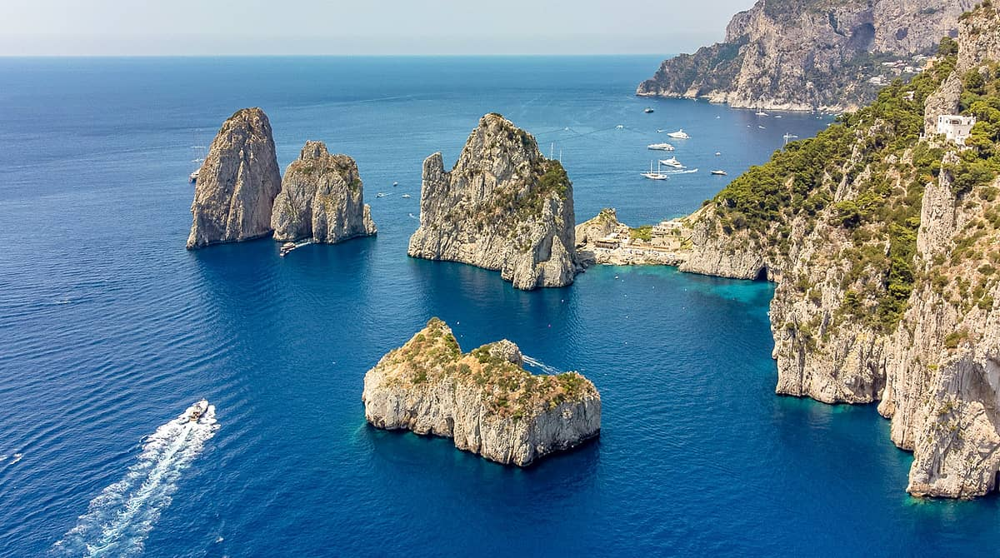
BARCO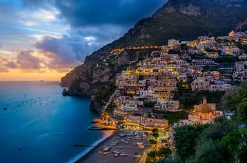
GLAMOUR DA ILHA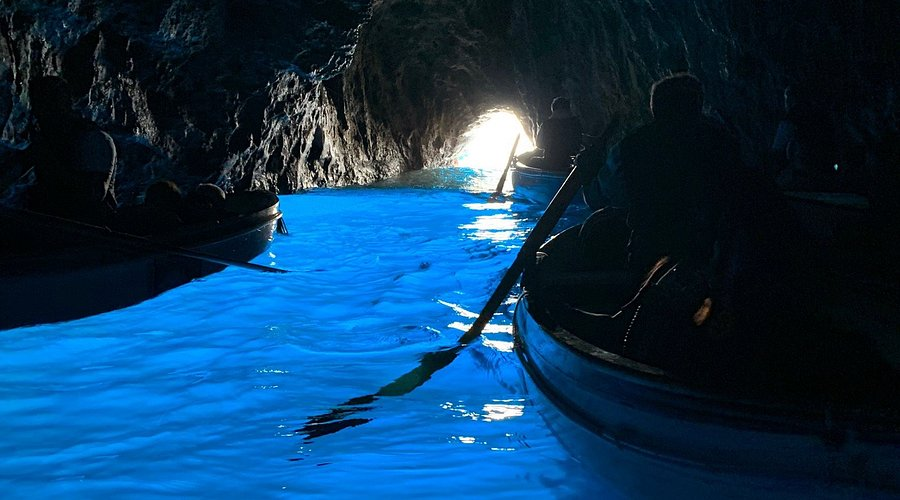
MAR AZULCapri não é uma ilha — é um estado de espírito. Apenas 10 km² de rocha calcária no Golfo de Nápoles que durante séculos atraiu imperadores romanos, escritores, artistas e milionários de todo o mundo. Tibério passou seus últimos anos aqui; Neruda escreveu poesia aqui; Grace Kelly passou luas de mel aqui. A Grotta Azzurra com sua luz azul sobrenatural, os Faraglioni emergindo do mar, a Piazzetta onde o glamour italiano existe em estado puro — Capri é o destino onde cada detalhe parece calculado para encantar.
Capri não tem carro particular para turistas. A ilha se conquista a pé, de ônibus laranja, de funicular e de táxi aberto. É pequena — mas íngreme.
Café da manhã e checkout do Unconventional Sorrento Coast. Ônibus para o porto, ferry para Capri o mais cedo possível. No porto: malas no guarda-volumes e direto para o passeio de barco ao redor da ilha com a Grotta Azzurra. À tarde: funicular até a Piazzetta, check-in no Hotel Regina Cristina, descanso e a noite mais glamourosa da viagem no Bianca Rooftop.
Checkout do Unconventional Sorrento Coast às 11h (malas já prontas). Ônibus EAV/SITA da parada de Sant'Agnello → Sorrento Centro → desça na Piazza Tasso e siga a pé até a Marina Piccola (~12 min).
⚠️ Bilhete do ônibus: não se vende dentro do ônibus. Comprem com antecedência numa tabaccheria (tabacaria), banca de jornal ou bar próximo. Custo: €1,50/pessoa.
Em agosto Capri recebe cruzeiros que chegam a partir das 10h — o porto e a Piazzetta ficam saturados. Chegar antes das 10h dá tempo de deixar as malas e embarcar no passeio de barco antes da multidão. Quanto mais cedo, melhor.
Check-in no Hotel Regina Cristina só às 15h. Ao chegar no porto, deixem as malas no guarda-volumes da Marina Grande antes de subir — não arrastem mala pelo calcário de Capri o dia todo. O serviço de bagageiro do porto ao hotel custa €10–20/mala e entrega direto no quarto.


Passeio de barco ao redor da ilha com Grotta Azzurra: €30–60/pessoa · saída Marina Grande ~10h · ~4h de duração
✦ Ver opções no GetYourGuideDeixem as malas na recepção do Regina Cristina. O hotel oferece serviço de bagageiro do porto ao quarto — confirmem na recepção ao chegar se quiserem usar. Enquanto esperam o quarto, a Piazzetta e a Via Camerelle estão a 3 min.
Check-in: a partir das 15h · Check-out: 12h · café da manhã buffet no restaurante La Terrazza di Venere (7h30–10h30)
 Piazzetta di Capri Piazza Umberto I glamour
Piazzetta di Capri Piazza Umberto I glamour
A Piazzetta — Piazza Umberto I — tem apenas 50 metros de diâmetro, mas concentra mais glamour por metro quadrado do que qualquer outra praça da Itália. Os cafés Grand Caffè e Caffè Tiberio com mesas na calçada são o teatro eterno onde celebridades, modelos e milionários se sentam ao lado de pescadores locais. O relógio medieval, a Igreja de Santo Stefano e a vista do porto lá embaixo compõem o cenário. Sentem um aperitivo aqui — a experiência Capri começa neste quadrado.
 Via Camerelle Capri luxury shopping street
Via Camerelle Capri luxury shopping street
A Via Camerelle concentra em 200 metros de largura o shopping mais exclusivo da Ilha — todas as maisons do luxo italiano têm aqui sua loja de Capri, com vitrines que combinam sandálias de artesanato local com bolsas de quatro dígitos. Não é preciso comprar para aproveitar — o passeio em si, com o perfume das buganvílias e a brisa do mar, já é um prazer de outro nível. O Hotel Regina Cristina fica praticamente na entrada da rua.
 Giardini di Augusto Capri Faraglioni sunset
Giardini di Augusto Capri Faraglioni sunset
Os Giardini di Augusto foram criados em 1900 pelo industrial Friedrich Alfred Krupp e nomeados em homenagem ao Imperador Augusto, que os criou originalmente 2000 anos antes. O jardim fica suspenso na borda da falésia e oferece a vista mais completa dos Faraglioni — as três rochas ao amanhecer foram ícone de toda a pintura romântica europeia do século XIX. Com o pôr do sol ao fundo e os Faraglioni dourados, é um dos finais de tarde mais bonitos da viagem inteira.
Entrada simbólica · sem reserva necessária · aberto até o anoitecer

📍 Hotel La Palma · 3 min a pé da Piazzetta · Via Vittorio Emanuele 39
Culinária: Steakhouse gourmet italiana · raw bar · churrasco em forno a carvão · vista 360° sobre Capri
💰 €60–100+ ≈ R$370–620 por pessoa · dress code: island chic · jantar apenas
🔴 Reserva essencial · esgota com dias de antecedência em agosto
↗ Mais informações e reservaCafé da manhã bem cedo no Hotel Regina Cristina. Ir para Anacapri conhecer o Monte Solaro de teleférico — a vista mais alta e mais bonita da ilha. Voltar para o hotel antes das 11h, fazer o checkout às 12h, almoço leve em Capri e ferry para Nápoles. Da estação de Nápoles, trem para Milão às 15h com chegada por volta das 19h30. Jantar perto do hotel na chegada.
⏰ Saiam bem cedo (7h30–8h) para chegar antes das filas de turistas. O teleférico abre às 9h15 em agosto.
 Anacapri village piazza
Anacapri village piazza
Anacapri fica na parte alta da ilha — mais tranquila, menos glamourosa, mais autêntica que Capri Town. A Piazza Vittoria é o coração do vilarejo, com cafés de bairro e o acesso direto ao teleférico do Monte Solaro. É onde os moradores locais tomam o café da manhã enquanto os turistas ainda dormem.
 Monte Solaro seggiovia chairlift Capri view
Monte Solaro seggiovia chairlift Capri view
O Monte Solaro é o ponto mais alto de Capri — 589 metros — e a vista de lá é de 360° sobre o Golfo de Nápoles, os Faraglioni, a Península Sorrentina, as ilhas de Ischia e Prócia e, nos dias mais claros, o contorno distante da Sicília. O teleférico individual (cadeira simples, sem travas automáticas) sobe em 12 minutos sobre jardins, vinhedos e vegetação mediterrânea. No topo, bar com aperitivo e terraço panorâmico.
€14/pessoa ida+volta ≈ R$86 · ou €11 somente subida/descida · abre às 9h15 em agosto · sem reserva. Compre na bilheteria na entrada — há armários grátis para deixar mochilas.
 Villa San Michele Anacapri garden sphinx view
Villa San Michele Anacapri garden sphinx view
Axel Munthe foi um médico e escritor sueco que se apaixonou por Capri no final do século XIX e construiu aqui uma das casas mais românticas do Mediterrâneo. O jardim com a esfinge de granito egípcia olhando para o golfo é um dos ângulos mais fotografados de Capri. O livro "A História de San Michele" é um clássico — se quiserem ler antes da viagem, vale muito.
~€8/pessoa · sem reserva necessária
 Igreja San Michele Anacapri maiolica floor
Igreja San Michele Anacapri maiolica floor
A Igreja de San Michele tem um piso de majólica do século XVIII pintado à mão com a cena do Éden — Adão e Eva, os animais, o paraíso — em mais de 2500 azulejos de cerâmica de Vietri. É preciso subir uma escada de caracol estreita para ver o piso de cima, de onde a composição inteira aparece. Uma das peças de arte sacra mais singulares de toda a Costa.
~€2/pessoa · muito em conta para o que oferece
Peguem o ônibus de Anacapri→Capri (€2,40) ou táxi. Façam o checkout no Hotel Regina Cristina às 12h. Se quiserem, o hotel guarda as malas enquanto almoçam — ou usem o serviço de bagageiro (€10–20/mala) direto até o porto.

📍 Via Lo Capo 8, Capri · 3 min da Piazzetta
Culinária: Italiana caprese · insalata caprese, linguine alle vongole, pesce fresco · terraço com vista
💰 €20–35 ≈ R$124–217 por pessoa
✅ Sem reserva · chegue antes das 13h
São 4h30 de viagem. Comprem um lanche ou sanduíche na estação antes de embarcar — vai ser muito mais em conta e prático do que comprar no vagão restaurante. Aproveitem para tirar um cochilo — chegam em Milão descansadas.
Hotel Bolzano · Via Boscovich 21 · 3★ · SEM café da manhã incluso · check-in a partir das 14h · checkout às 11h

📍 Via Tenca 24, Milão · 8 min a pé da Milano Centrale
Culinária: Smash burgers artesanais · pão doce estilo japonês · batatas fritas · opções vegetarianas
💰 €12–18 ≈ R$74–111 por pessoa · excelente custo-benefício para a região
✅ Sem reserva · pedido no balcão
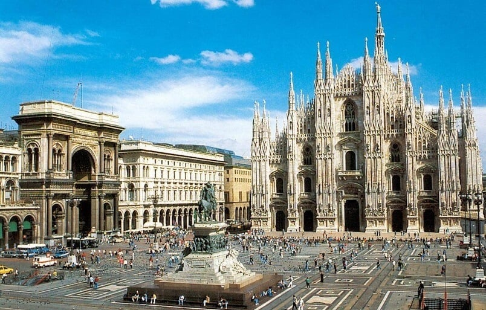
DUOMO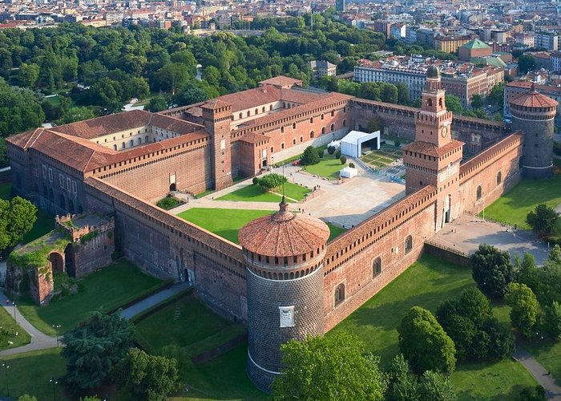
MODA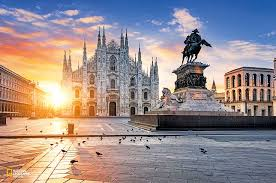
ARTEMilão é contraditória — e é exatamente isso que a torna fascinante. É a capital da moda e do design, mas guarda um dos afrescos mais importantes da história da arte no refeitório de um convento. É moderna e movida a negócios, mas reserva para si canais medievais e igrejas góticas de outro mundo. O Duomo, a Galleria, o Sforzesco, os Navigli à noite com o aperitivo — Milão entrega tudo isso comprimido em uma escala humana, sem precisar de dias para entender.
Café da manhã no centro histórico de Milão antes de conhecer o Duomo — que vale muito a visita. Galleria Vittorio Emanuele e Castelo Sforzesco (a vista e os jardins são gratuitos e lindos). Retornar ao hotel para fazer checkout e pegar o trem para Bellagio. Chegada no lago ao fim da tarde.
Hotel Bolzano · Via Boscovich 21 · 5 min a pé da Milano Centrale · ⚠️ Sem café incluso — tomem no centro hoje antes do Duomo.

📍 Galleria Vittorio Emanuele II, Piazza della Scala 2 · 2 min do Duomo
Fundada em 1824 · hoje parceria Prada · pasteis de amêndoa, cornetto, cappuccino · ambiente Belle Époque dourado
💰 €8–15 ≈ R$50–93 por pessoa · preço de luxo, experiência inesquecível

📍 Piazza del Duomo · na própria praça do Duomo
Café italiano clássico · cornetto + cappuccino no balcão ao estilo italiano · rápido e autêntico
💰 €3–5 ≈ R$18–31 · custo-benefício excelente
 Duomo di Milano exterior gothic spires
Duomo di Milano exterior gothic spires
Construída ao longo de quase 600 anos (1386–1965), a Catedral de Milão é um dos maiores templos góticos do mundo — com 135 agulhas de mármore, 3400 estátuas externas e 2245 estátuas internas. O terraço é o ponto mais visitado: subir entre as agulhas com a cidade visível em 360° abaixo é uma experiência completamente diferente de qualquer outro monumento da viagem. Em dias limpos, os Alpes são visíveis ao fundo.
~€3 só a catedral · ~€10–15 com o terraço (escada ou elevador) · reserve em ticketone.it para evitar fila
 Galleria Vittorio Emanuele II Milan interior dome
Galleria Vittorio Emanuele II Milan interior dome
A Galleria é uma passagem comercial coberta inaugurada em 1877 — com abóbadas de ferro e vidro, mosaicos no chão e lojas de Prada, Gucci e Louis Vuitton. Grátis para entrar e passear. No chão, no centro do octógono, há um touro em mosaico — é tradição girar o calcanhar 3x sobre seus genitais para dar sorte. Sentem no Marchesi 1824 dentro da Galleria para o café mais milanese de toda a viagem.
 Castello Sforzesco Milan tower garden
Castello Sforzesco Milan tower garden
O Castelo Sforzesco é um dos maiores castelos medievais da Europa — construído no século XV pelos Visconti e depois ampliado pelos Sforza. A fachada e a torre central são gratuitas e absolutamente impressionantes. O Parco Sempione atrás do castelo é um dos jardins mais bonitos de Milão — árvores centenárias, lago artificial e o Arco della Pace ao fundo. Pagar para entrar nos museus internos é opcional — a vista exterior e o jardim já justificam a caminhada.
Voltem ao Hotel Bolzano para o checkout (antes das 11h ou deixem as malas e saem). Antes de ir para a estação, peguem um lanche — há padarias e mercados na região da Milano Centrale muito mais em conta do que na região do Lago di Como.
Trens regionais Milano → Varenna geralmente não exigem reserva — você pode comprar na hora nas máquinas da estação ou no app Trenitalia. Para datas específicas em agosto, comprar com alguns dias de antecedência garante lugar e às vezes preço melhor.
É possível comprar online com semanas de antecedência — mas atenção: mesmo com bilhete online, ainda há fila para embarcar. O ferry em si forma fila independente de ter comprado antes. O mais prático é comprar na bilheteria do porto de Varenna e aguardar a próxima saída. Em agosto há movimento, mas o giro é rápido.
Check-in: 14h · Check-out: conforme roteiro · café da manhã incluso
Do ferry ao hotel são 5 min andando pela Salita Plinio — rua de pedra com degraus, atenção com a mala. Façam o check-in, deixem as malas e descansem do calor da viagem.

📍 Via Carcano 12, Bellagio · 8 min a pé do hotel
Culinária: Peixes frescos do lago · lavarello, misultin, agoni · massas artesanais
💰 €25–40 ≈ R$155–248 por pessoa · ingredientes do próprio lago
⚠️ Reserva recomendada em agosto
Após descanso no hotel, Bellagio é pequena e deliciosa de explorar a pé:
 Salita Serbelloni Bellagio steps lake
Salita Serbelloni Bellagio steps lake
A Salita Serbelloni é a escadaria de pedra medieval que sobe do porto até a villa acima — estreita, coberta de glicínias e com lojas de artesanato em cada degrau. É o cartão-postal mais icônico de Bellagio e fica a 2 min do hotel. À tarde com luz dourada é quando fica mais bonita.
 Basilica San Giacomo Bellagio piazza
Basilica San Giacomo Bellagio piazza
No topo da Salita Serbelloni, a Piazza della Chiesa tem a Basílica di San Giacomo do século XI — Romanico lombardo, interior com colunas de mármore negro e mosaicos medievais. A praça em si é o ponto de encontro dos bellaginos — cafés, gelaterias e a vista do lago entre os telhados.
 Punta Spartivento Bellagio sunset lake Como
Punta Spartivento Bellagio sunset lake Como
Punta Spartivento — literalmente "ponta que divide o vento" — é a extremidade sul de Bellagio onde os três braços do Lago di Como se encontram. Dali se vê simultaneamente Varenna à direita, Menaggio à esquerda e o lago se abrindo ao fundo. O pôr do sol aqui é de partir o coração. Se estiverem cansadas, o pôr do sol também é lindo da orla em frente ao hotel — sem precisar caminhar.
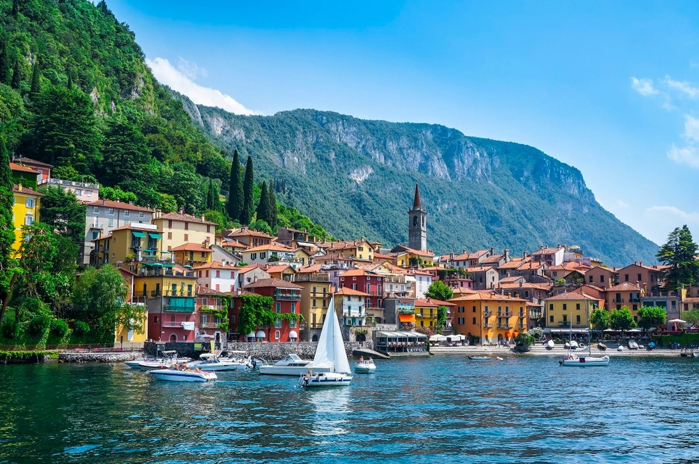
BARCO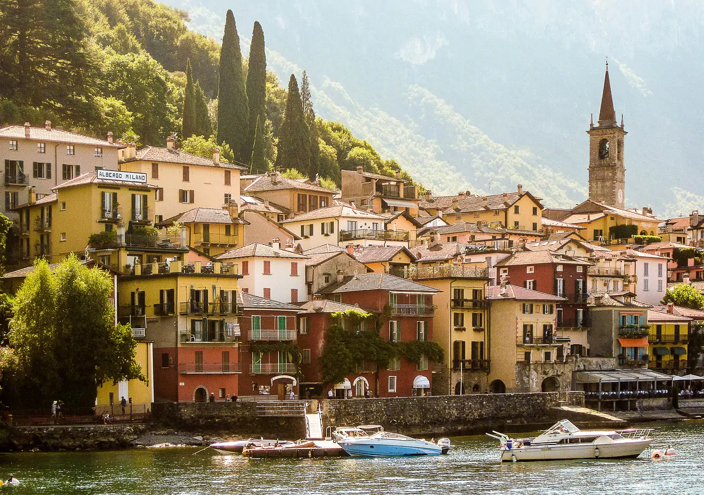
MONTANHAS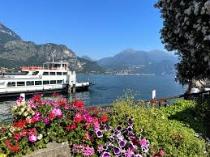
VILAS E JARDINSO Lago di Como é a resposta italiana à pergunta "onde é o lugar mais belo da Terra". Profundo demais para se ver o fundo (até 410 metros), espelho perfeito das montanhas alpinas ao redor, pontilhado de vilarejos coloridos e vilas do século XVIII com jardins suspensos sobre a água. Bellagio fica exatamente no triângulo que divide o lago — vila que resiste glamourosamente ao turismo moderno. Varenna, Menaggio, Nesso, Tremezzo — cada vilarejo é uma descoberta diferente, acessível de ferry em minutos.
É possível comprar online com semanas de antecedência — mas atenção: mesmo com bilhete online, ainda há fila para embarcar. O ferry forma fila independente de ter comprado antes. O mais prático é comprar na bilheteria do porto de Varenna e aguardar a próxima saída. Em agosto há movimento, mas o giro é rápido.
Check-in: 14h · Check-out: conforme roteiro · Façam check-in, deixem as malas e descansem do calor.
Café da manhã no hotel. Ferragosto — feriado nacional italiano — o lago está mais cheio mas também mais festivo. Começamos bem cedo com a vila escondida de Nesso, depois Lenno e a Villa Balbianello (reserva obrigatória), e encerramos com a Villa Carlotta em Tremesso. Volta para Bellagio ao fim da tarde.
Ferragosto é o feriado mais importante do verão italiano. Restaurantes e lojas podem ter horários especiais. As vilas públicas ficam mais cheias — por isso a reserva antecipada da Villa Balbianello é fundamental. O lago fica muito bonito neste dia com barcos e famílias italianas celebrando.
 Nesso Lake Como village gorge
Nesso Lake Como village gorge
Nesso é um daqueles vilarejos que parecem não existir para o mundo moderno. Escondido entre penhascos sobre o lago, com casas medievais agarradas às rochas e uma garganta dramática com uma cachoeira que desce direto para o Como — a Cascata dell'Orrido. A Piazza Castello e a Ponte della Civera (ponte medieval em arco de pedra) são os pontos principais. Muito fotogénico e quase sem turistas.
 Villa del Balbianello Lenno lake Como terrace
Villa del Balbianello Lenno lake Como terrace
A Villa del Balbianello fica numa pequena península que avança sobre o lago — construída no século XVIII pelo cardeal Durini e hoje pertencente ao FAI (Fundo Ambientale Italiano). Os jardins suspensos com terraços em socalcos sobre o lago são de uma beleza absurda. A villa foi usada como locação do 007: Casino Royale e de Star Wars: Episódio II. Visite o parque, os jardins e a loggia panorâmica — a vista do terraço é de parar o coração.
Ingresso: €10 (só parque e velarca) · acesso por barco ou a pé pela trilha de Lenno · reserve em ticket.fondoambiente.it com semanas de antecedência — em agosto esgota rapidamente.
✦ Reservar em ticket.fondoambiente.it Villa Carlotta Tremezzo garden lake Como view
Villa Carlotta Tremezzo garden lake Como view
A Villa Carlotta tem os jardins botânicos mais celebrados do Lago di Como — rododendros, azaleias, bambus, plantas tropicais e uma estufa de cactos em meio a terraços com vista para Bellagio do outro lado do lago. A villa em si guarda esculturas neoclássicas famosas, incluindo o Amor e Psiquê de Thorvaldsen. Em março-abril a floração é espetacular — em agosto os jardins estão exuberantes com o verde intenso do verão.
€14/pessoa ≈ R$87 · abre às 9h · sem reserva necessária · verificar horários em agosto em villacarlotta.it
Ferry Tremezzo → Bellagio (~15 min · €5) ou ônibus C10. O ferry sai frequentemente — não há horário fixo a confirmar em agosto.
Café da manhã no hotel. Dia de explorar o lago de ferry em ferry — Varenna pela manhã com a Piazza San Giorgio, Villa Monastero e o Castelo di Vezio, e Menaggio depois com a orla e o lido. Volta para Bellagio e pôr do sol na Punta Spartivento.
 Varenna Lake Como piazza village
Varenna Lake Como piazza village
Varenna é o antídoto para o turismo. Menos visitada que Bellagio, preserva o ritmo dos moradores — pescadores, cafés de bairro, gatos dormindo nas escadas de pedra. A Piazza San Giorgio é o coração, com a Igreja de San Giorgio do século XIV e os afrescos medievais intactos. Toda a atmosfera medieval do lago se preserva melhor aqui do que em qualquer outro vilarejo.
 Villa Monastero Varenna garden lake Como
Villa Monastero Varenna garden lake Como
A Villa Monastero foi um convento cisterciense do século XII, depois transformada em villa de lazer pelos nobres milaneses. Os jardins se estendem por 800 metros ao longo da beira do lago — terraços com citrus, rosas, ciprestes e esculturas neoclássicas com a água do Como sempre em perspectiva. Um dos jardins mais longos e mais bonitos de toda a região.
~€5/pessoa · sem reserva · verifique horários em agosto
 Castello di Vezio Varenna tower Lake Como view
Castello di Vezio Varenna tower Lake Como view
O Castelo di Vezio é um forte medieval do século X que domina Varenna e o lago de cima. A subida (30 min de trilha) é íngreme mas a vista é de 360° — Bellagio, Menaggio, os Alpes ao fundo e o lago em toda a sua extensão. Dentro funciona uma falcoaria com apresentações de falcões e corujas em voo livre.
~€5/pessoa · apresentações de falcoaria em horários fixos · verifique no local
 Menaggio Lake Como promenade waterfront
Menaggio Lake Como promenade waterfront
Menaggio é o ponto de partida para a Suíça e o mais animado dos vilarejos da margem oeste. A Piazza Garibaldi com seus cafés e a orla (Viale Benedetto Castelli) são o coração da vida local. O Lido di Menaggio é uma das raras praias de areia do lago — excelente para um mergulho à tarde. A Via Calvi sobe em direção ao centro histórico medieval.
 Passeggiata degli Innamorati Menaggio lake path
Passeggiata degli Innamorati Menaggio lake path
A Passeggiata degli Innamorati é uma trilha de 2km que parte da orla de Menaggio e segue junto ao lago até Loveno — à sombra de árvores centenárias, com o lago sempre visível à esquerda e as vilas históricas acima à direita. O nome "Caminhada dos Apaixonados" diz tudo. Em agosto a brisa do lago torna a caminhada suave mesmo no calor.
Ferry Menaggio → Bellagio · ~15 min · ~€5 · saídas frequentes. Pôr do sol na Punta Spartivento de Bellagio (~20 min a pé do porto) — ou na orla do hotel se estiverem cansadas.
Café da manhã no hotel. Bate-volta para Lugano na Suíça — carimbem mais um país! A viagem de Bellagio até Lugano é uma das mais cênicas da Europa: ferry, ônibus e o visual dos Alpes entrando pela janela. Lugano é uma cidade suíça com alma italiana — o centro histórico, o Lago di Lugano e o Monte San Salvatore são os pontos principais. Volta para Bellagio ao final da tarde.
Lugano fica no cantão Ticino — zona italiana da Suíça. A moeda é o Franco Suíço (CHF), mas euros são amplamente aceitos (câmbio desfavorável). Não há controle de fronteira rigoroso entre Schengen e Suíça, mas levem o passaporte. 1 CHF ≈ R$6,50.
 Lugano Switzerland lake promenade
Lugano Switzerland lake promenade
Lugano tem a posição geográfica mais improvável — uma cidade suíça com fachada italiana, espremida entre o Lago di Lugano e os Alpes do Ticino. O centro histórico (Città Vecchia) tem ruelas medievais, a Piazza della Riforma com cafés e a Cattedrale di San Lorenzo. A Riva Albertolli — a orla do lago — é um dos passeios mais agradáveis do bate-volta. O funicular sobe ao Monte San Salvatore (CHF 26) para a vista mais famosa da região — opcional.
Façam o caminho inverso: Lugano → Menaggio (ou Varenna) → ferry para Bellagio. Chegada ao fim da tarde para descanso antes do último dia no lago amanhã.
Café da manhã no hotel com calma. Vila Melzi pela manhã — a despedida perfeita de Bellagio e do Lago di Como. Checkout, ferry para Varenna, trem para Milão e Frecciarossa para Roma. Check-in no Hotel Trastevere à noite para os dois últimos dias na Cidade Eterna.
 Villa Melzi Bellagio Lake Como garden japanese
Villa Melzi Bellagio Lake Como garden japanese
A Villa Melzi foi a primeira villa neoclássica construída no Lago di Como após a chegada de Napoleão — erguida em 1808 pelo duque Francesco Melzi d'Eril. Os jardins combinam o estilo inglês com elementos japoneses e japoneses — azaleias, ciprestes, uma lagoa artificial e um pavilhão mourisca diretamente na beira do lago. A vista dos jardins em direção ao lago com Menaggio visível ao fundo é uma das mais serenas de toda a viagem.
~€6/pessoa · sem reserva · abre às 9h
Checkout no Hotel Centrale Bellagio. Ferry Bellagio → Varenna → trem para Milano Centrale → Frecciarossa para Roma Termini. Comprem um lanche para o trem (3h de viagem). Check-in no Hotel Trastevere à noite.
O Frecciarossa Milano → Roma é o trecho mais procurado da Itália. Reserve assim que possível pelo site ou app Trenitalia — os preços sobem muito próximo da data. Comprem as passagens os quatro trechos de uma vez: ferry (sem reserva) + regional Varenna → Milão + Frecciarossa Milão → Roma.
Check-in: a partir das 14h · Check-out: 12h · café da manhã incluso
Chegando de viagem, o ideal é fazer check-in e descansar. Mas se tiverem pique, Trastevere tem um dos melhores climas noturnos de Roma — ruelas de paralelepípedo iluminadas, bares com mesas na calçada, músicos de rua e restaurantes que abrem até meia-noite. É um passeio a pé pelo próprio bairro — sem precisar de metrô ou táxi.
Último dia. Roma de Trastevere — o lado que não fizemos antes. Pirâmide de Céstio, o Buraco da Fechadura com três países num olhar, o Giardino degli Aranci com a melhor vista da cidade, o Circo Máximo, a Boca da Verdade, a Ilha Tiberina, a Piazza di Santa Maria e a despedida na Piazza Trilussa com um copo de vinho.
 Piramide Cestia Rome Egypt pyramid
Piramide Cestia Rome Egypt pyramid
Uma pirâmide egípcia de mármore branco, construída em Roma em 12 a.C. como tumba do magistrado Gaio Céstio. É o monumento mais inesperado de Roma — uma pirâmide real, em mármore, encravada entre as muralhas aurelinas e o bairro de Testaccio. A vista exterior é gratuita e absolutamente surreal. Ao lado fica o Cemitério não-católico — onde estão enterrados Keats e Shelley.
 Buco della Serratura Rome keyhole Vatican view
Buco della Serratura Rome keyhole Vatican view
Na porta da sede dos Cavaleiros de Malta (Priorato di Malta), no Aventino, há um buraco de fechadura que enquadra perfeitamente a cúpula de São Pedro através de uma alameda de ciprestes. Ao mesmo tempo, você está em solo italiano, olhando pelo território soberano de Malta (a sede dos Cavaleiros) para o Vaticano — três países num único olhar. É uma das micro-experiências mais deslumbrantes de toda Roma, e é completamente de graça.
 Giardino degli Aranci Aventino Rome panorama
Giardino degli Aranci Aventino Rome panorama
A dois passos do Buraco da Fechadura, o Giardino degli Aranci (Jardim das Laranjas) fica no alto do Aventino e tem uma das vistas mais abertas de Roma — o Tibre, São Pedro, o Campidoglio, os telhados laranja do Trastevere à esquerda e o Circo Máximo logo abaixo. Com muito menos gente que o Gianicolo. Sentem num banco com uma aranja colhida e fiquem um pouco.
 Circo Massimo Rome ruins aerial
Circo Massimo Rome ruins aerial
O Circo Máximo é um vale gramado imenso entre o Aventino e o Palatino — mas não é "só" um campo verde. É o que restou do maior estádio que já existiu na história humana, com capacidade para 250 mil espectadores nas corridas de biga. De cima do Aventino (pelo Giardino degli Aranci) a escala impressiona. Em agosto às vezes há shows e eventos noturnos aqui.
 Bocca della Verita Rome marble disc
Bocca della Verita Rome marble disc
Disco de mármore do século IV — na fachada da Chiesa di Santa Maria in Cosmedin — com a face de um deus-rio pagão. A lenda diz que quem mentir com a mão na boca terá os dedos arrancados. A cena de Audrey Hepburn e Gregory Peck em Vacances Romaines (1953) transformou esse disco num dos objetos mais fotografados de Roma. Há sempre uma fila pequena mas rápida.
 Isola Tiberina Rome island river
Isola Tiberina Rome island river
A Ilha Tiberina é habitada há mais de 2000 anos — abriga hoje um hospital e a Igreja de San Bartolomeo. As duas pontes que a ligam à margem (Pons Fabricius de 62 a.C. — a mais antiga de Roma ainda em pé — e a Pons Cestius) são em si monumentos. Em agosto, a ilha recebe o festival Cinema all'Aperto — filmes ao ar livre à beira do rio.
 Piazza Santa Maria Trastevere Rome basilica
Piazza Santa Maria Trastevere Rome basilica
A Basílica di Santa Maria in Trastevere é uma das mais antigas de Roma — mosaicos dourados do século XII na fachada, Bernini e Fontana dentro. Mas o verdadeiro programa é sentar na fonte da piazza à noite e ver o bairro acordar para a noite — músicos de rua, casais, famílias, estudantes universitários. É o Trastevere que os moradores conhecem e que os turistas raramente param para realmente ver.

📍 Via della Paglia 1, Trastevere · 2 min da Piazza di Santa Maria
Culinária: Trattoria romana clássica · cacio e pepe, gricia, amatriciana, carbonara · ambiente animado com mesas na rua
💰 €15–30 ≈ R$93–186 por pessoa · custo-benefício excelente para o bairro
⚠️ Reserva recomendada em agosto · chegue antes das 20h
A Piazza Trilussa fica a 3 min da Tonnarello — é o ponto de encontro noturno de Trastevere. Comprem um copo de vinho nas enotecas ao redor e fiquem na piazza vendo o movimento. É a despedida mais romana possível de todas.
Este roteiro foi pensado para otimizar deslocamentos, horários e ritmo, garantindo a melhor experiência dentro do tempo disponível. Mas viagem não é um roteiro engessado — é experiência viva. Ajustem o que fizer sentido, prolonguem o que encantar e adaptem o dia conforme a energia de vocês.

Nós temos uma filosofia de vida: "Pelo menos uma vez ao ano conhecer um lugar que nunca fomos antes"
E o conhecimento nos proporciona viver isso.